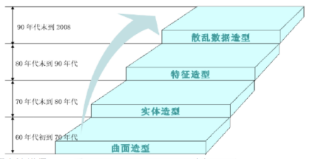
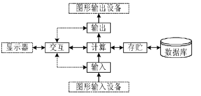
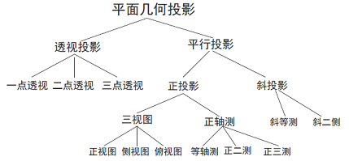
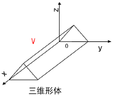
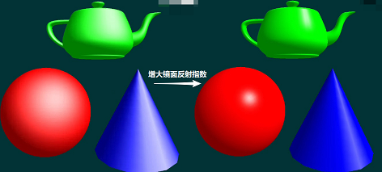

第1章 绪论
全书概述
- 图形学基本知识
- 光栅图形学
- 扫描转换、区域填充、裁减、反走样、消隐
- 二维、三维图形变换及观察准均匀 B 样条曲线
- 光栅图形学
- 几何造型
- 参数曲线曲面基本概念、Bezier曲线曲面、B样条曲线等
- 真实感图形学
- 颜色模型、简单光照模型、纹理映射、光线跟踪
计算机图形学定义
- 计算机图形学
- 计算机图形是计算机产生的图像。
- 计算机图形学就是研究如何在计算机中表示图形、以及利用计算机进行图形的计算、处理和显示的相关原理和算法。
- IEEE定义：Comput graphics is the art or science of producing graphical images with the aid of computer.
- 计算机图形学的发展和应用在某种意义上已成为计算机软、硬件发展水平的标志。
计算机图形学研究内容
- 主要研究内容
- 如何在计算机中表示图形、以及利用计算机进行图形的计算、处理和显示的相关原理与算法，构成了计算机图形学的主要研究内容。
- 计算机生成一副表示物体的图形的三个步骤
- 造型技术
- 在计算机中建立所要生成图像的物体的模型，即给出表示该物体的几何数据和拓扑关系
- 比如教室里的桌子、椅子、墙，用圆柱、平面等表示出来。
- 光照模型
- 希望用一些简单的数学模型来近似、代替那些物理学的模型，为模拟物体表面的光照物理现象的数学模型叫光照模型。
- 绘制（渲染）技术
- 选择适当的绘制算法来把这个场景画 (渲染) 出来。
- 绘制一幅三维物体图像所涉及的知识，实际上就是计算机图形中每个像素看上去应该是什么颜色的问题。
- 造型技术
- 计算机图形的发展方向
- 准确性 -> 真实性 -> 实时性
计算机图形学的发展历史
1950年，第一台图形显示器作为美国麻省理工学院 (MIT) 旋风 I 号计算机的附件诞生。
1963年，Suther land 发表博士论文。其中第一次提出了 graphics 这个词。
- Suther land 被公认为开创交互式图形技术的奠基人，被称为 “计算机图形学之父”，并于 1988 年获 “图灵奖”。
1962年，雷诺汽车公司的工程师 Bezier 提出 Bezier 曲线、曲面的理论，成为 CAGD (计算机辅助几何设计) 的先驱。
1964年，MIT教授 Steven A. Coons 提出了超限插值的新思想，通过插值四条任意的边界曲线来构造曲面。
70年代，光栅显示器出现了。光栅显示器屏幕是由像素组成的，由此诞生了大量算法，如区域填充、裁剪、消隐等基本图形概念、及其相应算法。
真实感图形和几何造型技术这个时候也开始出现了。
1975年，Phong 提出了著名的简单光照模型 - Phong模型 (标志着真实感图形的出现和实用化，直到现在 Phong 模型还被大量的采用)
1980年，Whitted 提出了光透视模型 - Whitted 模型，成为第一次提出光线跟踪算法的范例。
几何造型技术：通俗地讲，该技术就像小孩搭积木，用简单的一些体素来构建复杂的模型。

计算机图形学的应用领域
- 人机交互和图形用户界面
- 最理想的是开发 “能听、能说、能理解人类语言” 的计算机，人们可以和计算机交谈，而不像现在这样仅限于窗口、图标、鼠标、指针 (WIMP) 界面。
- 计算机辅助设计与制造 (CAD/CAM)
- CAD/CAM 是计算机图形学在工业界最广泛、最活跃的应用领域。
- 飞机、汽车、船舶、宇宙飞船的外形设计
- 发电厂、化工厂等的布局
- CAD/CAM 是计算机图形学在工业界最广泛、最活跃的应用领域。
- 真实感图形实时绘制与自然景物仿真
- 计算机中重现真实世界的场景叫做真实感绘制。
- 计算机动画、游戏、电影
- 计算机艺术
- 计算机艺术是科学与技术相结合的一门新兴的交叉学科，是计算机应用的一个崭新、富有时代气息的领域。
- 计算机仿真
- 计算机仿真是计算机技术建立被仿真系统的模型，并在某些实验条件下对模型进行动态实验的一门综合性技术。
- 科学计算可视化
- 虚拟现实
- 虚拟现实是利用计算机模拟现实的场景，使参与者获得与现实一样的感觉。
- 准确地说，是利用电脑模拟产生一个三维空间的虚拟世界，提供使用者关于视觉、听觉、触觉等感官的模拟，让使用者如同身历其境一般，可以及时、没有限制地观察三度空间内的事物。
- 地理信息系统
- 地理信息系统是建立在地理图形之上的关于各种资源的综合信息管理系统，是计算机图形学的一个重要应用领域。
- 农业上的应用
- 借助计算机图形生成技术来保存和再现不同作物种类和不同生长时期的植物形态，模拟植物的生长过程，从而合理地进行选种、播种、田间管理以及收获等。
计算机图形系统组成
五大功能
一个交互式计算机图形系统应具有计算、存储、对话、输入和输出等 5 个方面的功能。

图形系统
- 图形软件
- 图形应用数据结构：对应一组图形数据文件，其中存放着欲生成的图形对象的全部描述信息。
- 图形应用软件
- 解决某种应用问题的图形软件，是图形系统中的核心部分，包括了各种图形生成和处理技术。如：photoshop、3Dmax等。
- 图形支撑软件：大多数图形应用程序是建立在一定的图形支撑软件上。图形支撑软件需具有规范接口。
- 图形硬件
- 图形软件
图形显示设备
- 阴级射线管
- 使用广泛：现在的图形显示设备绝大多数是基于阴极射线管 (CRT) 的显示器。
- 阴极射线管的技术指标
- 分辨率：一个阴极射线管在水平和垂直方向单位长度上能识别出的最大光点数称之为分辨率。光点亦称之为像素 (pixel)。
- 显示速度
- 要保持荧光屏上有稳定的图像就必须不断地发射电子束。只有刷新频率高到一定值后，图像才能稳定显示。大约达到每秒 60 帧即 60Hz 时，人眼才能感觉到屏幕不闪烁，要人眼觉得舒服，一般必须有 85Hz 以上的刷新频率。
- 彩色阴极射线管
- 三只电子枪，分别涂有红、绿、蓝三种颜色的光。
- CRT图形显示器
- 随机扫描的图形显示器 (画线设备)
- 电子束的扫描轨迹随显示内容而变化，只在需要的地方扫描，而不必全屏扫描，因此速度快，图像清晰。
- 一条线一条线地画图，因此也称为向量显示器。
- 随机扫描系统是为画线应用设计的，因此不能显示逼真的有阴影场景。
- 光栅扫描显示器 (画点设备)
- 不能直接从一个可编地址的像素画一条直线到另一个可编地址的像素，只可能用尽可能靠近这条直线路径的像素点来近似地表示这条直线。
- 在光栅扫描系统中，电子束横向扫描屏幕，一次一行，从上到底顺次进行。当电子束横向沿每一行移动时，电子束的强度不断变化来建立亮点的图案。
- 由于光栅扫描系统具有存储每一个屏幕点亮度信息的能力，所以，最适合显示浓淡和色彩图形。
- 随机扫描的图形显示器 (画线设备)
- 例题：显卡有 2MB 显存，当分辨率为 1024×768 时，可支持的色彩数是多少？
$2MB = 2\times 1024 \times 1024 =2097152 (字节)$
$1024\times 768 = 786432 (个像素) $
每个像素如果需要 3 个字节表示，将超过 2MB 显存，最多只需要 2 个字节表示，故只能支持 64K 色彩数
图形学相关概念
- 分辨率
- 光点
- 光点指电子束打在显示器荧光屏上，显示器能够显示的最小的发光点，一般用其直径来表明光点的大小。
- 像素点
- 像素点是指图形显示在屏幕上时候，按当前的图形显示分辨率所能提供的最小元素点。
- 屏幕分辨率
- 屏幕上显示的像素个数，以 (水平像素数 * 垂直像素数) 表示。
- 显示分辨率
- 是计算机显示控制器所能够控制的显示模式分辨率，简称显示模式。
- 对于文本显示方式，显示分辨率用水平和垂直方向上所能显示的字符总数的乘积来表示。
- 对于图形显示方式，则用水平和垂直方向上所能显示的像素点总数的乘积来表示。
- 显卡分辨率
- 显卡分辨率就是表示显卡输出给显示器，并能在显示器上描绘像素点的数量。
- 一台电脑的最高分辨率是由显卡和显示器共同决定的。显示器最高分辨率是可以显示出来的最大分辨率。显卡的最大分辨率是最大能支持多少分辨率。
- 电脑的最高分辨率取决于显卡和显示器最低的一个。
- 光点
- 显示器的点距
- 指相邻像素点之间的距离。两点之间的距离越小越好。
- 15寸显示器，点距达到0.28mm就足够。17寸显示器，需要0.27mm、0.25mm等。
- 显示卡的作用与性能指标
- 显示卡的基本作用就是显示图文，显示卡和显示器构成了计算机的显示系统。
- 除了CPU和内存外，显卡对计算机的显示性能起着决定性的作用。
图形图像的区别及存储格式
图形图像的区别
- 说法一
- 图形是由计算机绘制而成的，而图像则是人为的用外部设备所捕捉到的外部的景象。
- 说法二
- 图形是矢量图，而图像是位图 (点阵图)
- 说法一
图形 (像) 的构成属性
- 几何属性
- 刻画对象的轮廓、形状。包括点、线、面、体等。
- 非几何属性
- 视觉属性，刻画对象的颜色、材质等。包括明暗、色彩、纹理、透明性、线型、线宽。
- 从构图要素上看，将图形分为两类
- 几何属性有突出作用：工程图、等高线地图、曲面的线框图
- 非几何属性有突出作用 (明暗图)：真实感图形
- 几何属性
位图和矢量图定义
- 位图 (点阵图)
- 点阵图或像素图，计算机屏幕上的图是由屏幕上的像素构成的，每个点用二进制数据来描述其颜色与亮度等信息。
- 矢量图
- 面向对象的图形或绘图图形，是用数学方式描述的曲线及曲线围成的色块制作的图形。
- 矢量文件中的图形元素称为对象。每个对象都是一个自成一体的实体，它具有颜色、形状、轮廓、大小和屏幕位置等属性。
- 位图 (点阵图)
位图和矢量图区别
存储方式的区别
- 点阵文件存储图的各个像素点的位置信息、颜色信息以及灰度信息。
- 矢量文件是用数学方程、数学形式对图形进行描述，通常使用图形的形状参数和属性参数来表示图形。
- 因此，点阵文件存储空间比矢量文件大。
缩放的区别
- 点阵文件与分辨率有关，即在一定面积的图像上包含有固定数量的像素。
- 矢量图形与分辨率无关，可以将它缩放到任意大小和以任意分辨率在输出设备上打印出来，不会影响清晰度。
存储格式的区别
- 位图存储格式：BMP、TIFF、GIF、JPEG、PNG
- 矢量图存储格式：DXF、SVG、EPS、WMF、EMF
总结
位图 矢量图 存储内容 各像素点位置信息、颜色信息以及灰度信息 数学方程 存储空间 大 小 常见存储格式 BMP、TIFF、GIF、JPEG、PNG DXF、SVG、EPS、WMF、EMF 图形缩放 失真 不失真 真实感图形效果 容易实现 不容易实现
第2章 光栅图形学
直线段的扫描转换
数值微分法（DDA）
对于线段 $ (x_0, y_0) \rightarrow (x_1, y_1)$，其斜率为 $k = \frac{y_1-y_0}{x_1-x_0}$ 。
从点 $(x_0, y_0) \rightarrow (x_0+\Delta x, y_0+k \Delta x) \rightarrow (x_0+2\Delta x, y_0+2k \Delta x) \rightarrow \cdots \rightarrow (x_i,y_i) \rightarrow \cdots \rightarrow (x_1, y_1)$ 逐步绘点
1 | void DDALine(int x0, int y0, int x1, int y1, Color PIXEL_COLOR) |
需要注意的是——斜率问题，上述算法仅在斜率 $|k| \le 1 $ 的情况适用，因为这种情况下，$x $每次增加1，$y $每次最多增加1。当 $|k| \gt 1 $时，可以举例看到 $ (0, 0) \rightarrow (2, 5) $以及 $ (0, 0) \rightarrow (2, 100)$ 都将只有三个点绘成！
这种情况下，只要把 $x、y$ 的地位互换即可。
1 | void DDALine(int x0, int y0, int x1, int y1, Color PIXEL_COLOR) |
注意，代码中没有特判处理 $k=0$ 情况。
中点画线法
在DDA画直线过程中，当前点 $(x_0, y_0) $，下一个点可能是 $(x_0+1, y_0) $ 或 $(x_0+1, y_0+1) $ ，所以采用四舍五入进行抉择，本质上来说，真实交点在中点 $M(x_0+1, y_0+0.5) $ 上方，则选 $(x_0+1, y_0+1) $ ，下方则选 $(x_0+1, y_0) $ 。
中点画线法，就是基于这种思想，判断交点与中点的位置关系，替代原本四舍五入这一涉及浮点数的方法去做抉择，并且核心是从斜截式方程改为一般式方程。
对于线段 $ (x_0, y_0) \rightarrow (x_1, y_1)$，其一般式方程为 $F(x,y) = ax+by+c $，其中$a =y_0-y_1，b=x_1-x_0，c=x_0y_1-x_1y_0 $ 。
将中点带入方程，构建判别式 $d = F(M) = F(x_p+1, y_p+0.5) = a(x_p+1)+b(y_p+0.5)+c$，
若 $d \ge 0$， 则交点在中点下方，画点 $(x_p+1,y_p)$，下一次 $d ‘ = F(x_p+2,y_p+0.5) = d+a$，增量为 $a$；
若 $d \lt 0$， 则交点在中点上方，画点 $(x_p+1,y_p+1)$，下一次 $d ‘ = F(x_p+2,y_p+1.5) = d+a+b$，增量为 $a+b$；
从 $(x_0,y_0) $ 开始画线时候，$d $ 的初值 $d_0 = F(x_0+1,y_0+0.5) = F(x_0, y_0) + a + 0.5b = a+0.5b$，涉及浮点数，故采用 $2d $ 替代 $d$ 摆脱浮点数，此时，算法仅包含整数运算。
1 | void MidPointLine(int x0, int y0, int x1, int y1, Color PIXEL_COLOR) |
注意，代码仅处理了 $ 0 \le k \le 1$ 情况。
Bresenham算法
Bresenham算法类似于中点法，由误差项符号决定下一个像素取右边点或右上点。
对于线段 $ (x_0, y_0) \rightarrow (x_1, y_1)$，其斜截式为 $y = kx+b$，对于 $(x_0, y_0) $ 的下一个点理应为 $(x_0+1, \text{round}(y_0+k)) $，即将 $y_0+k $ 四舍五入，又因为其中 $y_0 $为整数，故只需要判断 $k $ 与 $0.5 $ 的大小关系。同理，下下个点 $(x_0+2, \text{round}(y_0+2k)) $，决定因素是 $2k $，或者说 $2k $ 的小数部分，故增量为 $k$，注意模1。我们接下来用 $e$ 表示当前误差项。
第一个优化：将判断 $e $ 与 $0.5 $ 的大小关系，优化为判断 $e-0.5 $ 与 $0 $ 的大小关系，即 $e $ 的初值设置。
1 | void bresenhamLine(int x0, int y0, int x1, int y1, Color PIXEL_COLOR) |
第二个优化：将 $e$ 整数化，由于算法中只用到误差项的符号，原增量 $k · \Delta= \frac{y_1-y_0}{x_1-x_0} · \Delta $，移项后 $k· (x_1-x_0)\Delta = (y_1-y_0) \Delta $，考虑上 $e $ 的初值设置，故将增量换成 $k ‘ = k· (x_1-x_0) \Delta=(y_1-y_0) \Delta $，$e_0 = \Delta · -(x_1-x_0)/2$。要完全去浮点数，取 $ \Delta = 2 $ 即可。
1 | void bresenhamLine(int x0, int y0, int x1, int y1, Color PIXEL_COLOR) |
同时注意，算法中仅处理了$ 0 \le k \le 1$ 情况。
第三个优化：处理斜率 $k \ge 1$ 情况，和DDA方法一样，将$x、y $ 地位互换。
1 | void bresenhamLine(int x0, int y0, int x1, int y1, Color PIXEL_COLOR) |
第四个优化：处理斜率为负数情况，将线段沿着 $x $ 轴对称后做上述算法，画点时 $y $ 值注意乘-1。
1 | void bresenhamLine(int x0, int y0, int x1, int y1, Color PIXEL_COLOR) |
圆弧的扫描转换
圆的八对称性
$(x,y)、(y,x)、(-x,y)、(y,-x)、(x,-y)、(-y,x)、(-x,-y)、(-y,-x) $ 对称。
1 | void drawEightCirclePoints(int x, int y, Color c, int size=1) |
中点画圆法
由于中点画圆法与Bresenham画线法有相似之处，故又被称为Bresenham画圆法。
圆：$F(x,y) = x^2+y^2-R^2$，圆内的点 $F(x,y) \lt 0 $，圆外的点 $F(x,y) \gt 0$。
构建判别式：$d = F(M) = F(x_p+1, y_p-0.5) = (x_p+1)^2+(y_p-0.5)^2-R^2 $。
- 若 $d \lt 0 $，画点 $P_1(x_p+1,y_p)$，下一像素判别式 $d_1 = F(x_p+2, y_p-0.5)=d+2x_p+3$
- 若 $d \gt 0 $，画点 $P_2(x_p+1,y_p-1) $，下一像素判别式 $d_1 = F(x_p+2, y_p-1.5)=d+2(x_p-y_p)+5 $
从$(0,R) $开始顺时针画圆，$ d $ 的初始值 $d_0 = F(1,R-0.5) = 1.25-R $
1 | void bresenhamDrawCircle(int cx, int cy, int r) |
考虑优化掉浮点数，优化乘法为加法。
中点画椭圆法
与中点画圆法类似，参照则写即可。
椭圆：$F(x,y) = b^2 x^2+a^2 y^2-a^2 b^2$
构建判别式：$d = F(M) = F(x_p+1\Delta, y_p-0.5\Delta) = b^2 (x_p+\Delta)^2+ a^2 (y_p-0.5\Delta)^2 - a^2 b^2 $。
若 $d \lt 0 $，画点 $P_1(x_p+1\Delta,y_p)$，下一像素判别式 $d_1 = F(x_p+2\Delta, y_p-0.5\Delta)=d+(2 x_p \Delta + 3 \Delta ^2)b^2$
若 $d \gt 0 $，画点 $P_2(x_p+1\Delta,y_p-1\Delta) $，下一像素判别式
$d_1 = F(x_p+2\Delta, y_p-1.5\Delta)=d+(2 x_p \Delta + 3 \Delta ^2)b^2 + (-2y_p \Delta + 2\Delta^2)a^2 $
从$(0,b) $开始顺时针利用四对称性画椭圆，$ d $ 的初始值 $d_0 = F(1\Delta,b-0.5\Delta) = 0.25 a^2 \Delta^2 + b^2 \Delta^2 - a^2 b \Delta $。其中 $\Delta $ 是网格单位距。
1 | void bresenhamDrawOval(int cx, int cy, int a, int b) |
如果你认为上述代码能生成一个椭圆，那就错了！
椭圆只有四对称性，极接近 $x $ 轴时，会出现切线斜率为 -1 的情况，这时主导地位应换为 $y $。即要分为两区域画图。在椭圆上过点 $P(x_0, y_0) $的切线斜率为：$k = -\frac{b^2 x_0}{a^2 y_0}$ ，特判 $k\le-1 $时退出第一区域。
构建判别式：$d = F(M) = F(x_p+0.5\Delta, y_p-1\Delta) = b^2 (x_p+0.5\Delta)^2+ a^2 (y_p-1\Delta)^2 - a^2 b^2 $。
- 若 $d \lt 0 $，画点 $P_1(x_p+1\Delta,y_p-1\Delta)$，下一像素判别式 $d_1 = F(x_p+1.5, y_p-2)=d + (-2y_p\Delta+3\Delta^2)a^2 +(2x_p\Delta+2\Delta^2)b^2$
- 若 $d \gt 0 $，画点 $P_2(x_p,y_p-1\Delta) $，下一像素判别式 $d_1 = F(x_p+0.5\Delta, y_p-2\Delta)=d+(-2y_p\Delta+3\Delta^2)a^2 $
最终版：
1 | void bresenhamDrawOval(int cx, int cy, int a, int b) |
多边形的扫描转换
多边形的两种表示：
- 顶点表示：直观、几何意义强、占内存少、易进行几何变换，但不能直接用于面着色。
- 点阵表示：便于帧缓冲器表示图形、面着色，但丢失了许多几何信息。
多边形分为：凸、凹多边形，以及含内环的多边形。
X-扫描线算法(活性边表法)
- 从$y = y_{min} $ 到 $y = y_{max} $ ，每条扫描线 $y = y_i$ 与多边形的相交区间 $[L_1, R_1]、\cdots、 [L_n, R_n]$
- 指定颜色显示区间像素 ${(x, y_i) \ | \ x = L_1,L_1+1,\cdots,R_1,L_2,\cdots,R_n}$
当扫描线与多边形顶点相交时，交点的取舍策略为保证交点数目偶数个：
- 若共享顶点的两条边分别落在扫描线的两边，交点只算 1 个
- 若共享顶点的两条边在扫描线的同一边，这时交点作为 0 个或 2 个
上述算法（求交、排序、配对、填色）的重要思想是扫描线和增量，但求交的效率十分低，故算法需要优化，主要从3个方面考虑：
- 与有效边求交：在处理一条扫描线时，仅对与它相交的多边形的边进行求交运算
- 扫描线的连贯性：当前扫描线与各边的交点与下一条扫描线与各边的交点很可能相同或非常相似
- 多边形的连贯性：当某条边与当前扫描线相交时，它很可能也与下一条扫描线相交
引入数据结构 1 ——活性边表(AET)：
活性边：与当前扫描线相交的边
表：将活性边按交点 x 坐标升序存放在于链表
节点内容
$x $：活性边与扫描线的交点 x 坐标
$ \Delta x $ ：从”当前扫描线与活性边交点”到”下一条扫描线与活性边交点”间的 x 增量。
由活性边斜率 $k = \frac{y_{i+1}-y_i}{x_{i+1}-x_i} \Rightarrow \Delta x = \frac{1}{k \Delta } $，其中单个 $\Delta $ 为扫描线增量。
$y_{max} $：该活性边所交的最高扫描线的 y 坐标
引入数据结构 2 ——新边表(NET)：
- 表：按照扫描线第一次交于该边的高度，建立链表
- 节点内容
- $y_{max} $：该边的最高 y 值
- $x_{min} $：该边较低点的 x 值，注意是较低点不是左点
- $1/k $：该边的斜率倒数
上图扫描线$y = 1 $ 交的两条边$P_1P_2、P_1P_6 $ 即可以放入活性边表处理。
每次做新的扫描线时，要对活性边进行三个处理：
是否去除该活性边。
若不去除，就更新其数据，$x = x + \frac{1}{k \Delta} $
根据新边表判断有无新边进入，有则插入排序到活性边表。
如此算法避免了求交，伪码如下：
1 | void polyFill(polygon, color) |
边界标志算法
在帧缓冲器中对多边形的每条边进行直线扫描转换，即对多边形边界所经过的像素打上标记。
从左到右逐个访问扫描线的像素，进行上色。
边界标志算法更适合硬件实现，这时它的执行速度比有序边表算法快一至两个数量级。
1 | void edgemarkFill(polydef, color) |
边缘填充算法
一张图：
栅栏填充算法
对边缘填充算法的改进，栅栏指一条过多边形顶点且与扫描线垂直的直线，它把多边形分为两半。
在处理每条边与扫描线的交点时，将交点与栅栏之间的像素取补。
多边形的区域填充
区域：已经表示成点阵形式的填充图形，是像素的集合
区域填充：指将区域内的一点(常称种子点)赋予给定颜色，然后将这种颜色扩展到整个区域内的过程。
区域填充算法(泛滥填充算法)
DFS/BFS
扫描线种子填充算法
区域填充扫描线方法。上一算法从种子点开始DFS/BFS，其中多次入栈(队)，费时费内存效率不高。实际上知道了一个点，我们可以从该点向左向右循环填充直至碰触边界。扫描线种子填充算法就是用这个结合扫描线，解决了多次入栈(队)的问题。
1 | void ScanLineFill4(int x, int y, Color oldColor, Color newColor) |
扫描转换与区域填充的不同
- 基本思想不同
- 扫描转换：将多边形顶点转换为点阵表示。
- 区域填充：只改变区域颜色，不改变区域的表示方法。
- 基本条件不同
- 扫描转换：从多边形的边界(顶点)信息出发，利用多种形式的连贯性进行填充点阵。
- 区域填充：给定区域内一点作为种子点，然后从点根据连通性将新的颜色扩散到整个区域。
- 目的不同
- 扫描转换：知道多边形边界，求多边形内部的像素集。
- 区域填充：知道边界、区域内一点，内部填色。
反走样
走样现象
- 光栅图形缠身的阶梯型（锯齿形）
- 小物体由于走样而消失
- 动画序列中时隐时现，产生闪烁（仅在矩形覆盖像素中心时显示）
反走样技术原理
反走样(Antialiasing)
- 提高设备分辨率：由于存储器代价、扫描转换时间代价、轰击屏幕电子枪的速度代价，所以不可取
模糊：对于白色背景中黑色矩形，在矩形边界掺入灰色像素，柔化从黑到白的尖锐变化。从远处观察图像，人眼把这些缓和变化的暗影融合在一起，从而看到更平滑的边界。
非加权区域采样方法
方法：根据物体的覆盖率（某个像素区域被物体覆盖的比例）计算像素的颜色。
两个缺点：
像素亮度与相交区域面积成正比，而与相交区域在像素内的位置无关 -> 仍有锯齿效应
直线条上沿理想直线方向的相邻两个象素有时会有较大的灰度差（因为每个像素的权值都一样）
加权区域采样方法
在加权方法中，将像素亮度与相交区域在像素内的位置看作有关。
思想：直线段对一个像素亮度的贡献正比于相交区域与像素中心的距离 $d $
方法：设置相交区域面积与像素中心距离的权函数（高斯函数）反映相交面积对整个像素亮度的贡献大小，利用权函数积分求相交区域面积，再乘以最大亮度值即为像素实际亮度值。
简化方案：将积分改为离散计算
直线裁剪算法
裁剪
裁剪：确定图形哪些部分落于显示区之内/外。
最简单的剪裁：转换为点的剪裁
点的剪裁：判断 $\begin{cases} x_{left} \le x \le x_{right} \ y_{bottom} \le y \le y_{top} \end{cases}$
直线段的剪裁：判断 $\begin{cases} 完全落在窗口内 \ 完全落在窗口外 \ 与窗口边界相交 \end{cases} $
Cohen-Sutherland算法
又称编码裁剪算法。
思想：对每条直线段分是三种情况
- 若点 $p_1 $ 和 $p_2 $ 完全在剪裁窗口内：取之
- 若点为下图四种之一：弃之
- 其他情况，可以采用编码的方法：顶点编码$D_3D_2D_1D_0 $， $\begin{cases} D_0 = x<x_{left} \ D_1 = x>x_{right} \ D_2 = y<y_{bottom} \ D_3 = y>y_{top} \ \end{cases} $
- 若 $p1 \ |\ p2 = 0 $，取之
- 若 $p1 \ &\ p2 \not= 0$ ，丢之
- 若上述都不满足，则依次按左、右、上、下的顺序求出线段与窗口的交点。
然后在交点处把线段一分为二，根据上述两个原则舍/取一部分。
特点
较适合两种情况——大部分线可见、大部分线不可见。
存在问题：下图线段要多次经过算交点才会被舍弃。
中点分割算法
与Cohen-Sutherland算法相似，需要对位置进行编码。
思想：通过二分逼近来确定线段与窗口的交点
完全在窗口内/外的情况
和窗口有交点，构建线段中点
若中点在窗口内，则不断构建交点与端点的中点
若中点在窗口外，则把 (中点, 离窗口边界较远的端点) 部分去掉。
- 以此逼近。
Liang-Barsky算法
线段 $(x_1,y_1) \rightarrow (x_2,y_2) $
特判：
- 若 $x_1 = x_2 $，判断 $x_1-x_{left} \lt 0$ 或 $x_{right}-x_1 \lt 0$ 则线段不在窗口内
- 若 $y_1=y_2$，判断 $y_1 - y_{bottom} \lt 0 $ 或 $y_{top}-y_1 \lt 0 $ 则线段不在窗口内
思想：
用参数方程表示直线段 $\begin{cases} x = x_1 + u·(x_2-x_1) = x_1 + u·\Delta x \ y = y_1+u·(y_2-y_1)=y_1 + u·\Delta y \end{cases} ， 0 \le u \le1$
将直线段看成一条有方向的线段（标记端点为绿色），把窗口的四条边及其延长线分成入边、出边两种。
- 入边：直线由窗口外向内移动时和窗口边界相交的边（标记交点为红色）
- 出边：直线由窗口内向外移动时和窗口边界相交的边（标记交点为红色）
- 用 $u_1、u_2$ 分别表示线段 $(u_1 \le u_2)$ 可见部分的开始和结束 $\large \begin{cases} u_1 = max(0,u_{left},u_{bottom}) \ u_2 = min(1,u_{top},u_{right}) \end{cases} $
问题：
问题1.如何判断哪两个边是入边，哪两个边是出边
问题2.直线和窗口边界线四个交点参数 u 值如何求出
将裁剪转换为不等式：$\begin{cases} x_{left} \le x_1 + u·\Delta x \le x_{right} \ y_{bottom} \le y_1+u·\Delta y \le y_{top} \end{cases} \Rightarrow \begin{cases} u·(-\Delta x) \le x_1 - x_{left} \ u·\Delta x \le x_{right} - x_1 \ u·(-\Delta y) \le y_1 - y_{bottom} \ u·\Delta y \le y_{top} - y_1 \ \end{cases} $
将上面不等式看作 $u·p_k \le q_k$，四个不等式参数意义一一对应。当不等式取等号时， $u = \frac{q_k}{p_k} $即为直线和窗口四条边交点处的参数。（问题 2 解决）
除此之外，对于问题 1 的解决，根据 $p_k$ 的符号判断：

故，$u_1、u_2 $ 进一步得到为 $\large \begin{cases} u_1 = max(0,u_{k|p_k \lt 0},u_{k|p_k \lt 0}) \ u_2 = min(1,u_{k|p_k \gt 0},u_{k|p_k \gt 0}) \end{cases} $，若 $u_1 \gt u_2$ 则在窗口外。
例子：
多边形裁剪
一个简单的想法：多边形裁剪转换为直线的裁剪，然而会得到一些不连续直线段。
然而目标却是：多边形边界的顶点序列
Sutherland-Hodgeman多边形裁剪
算法思想：
- 将多边形边界作为一个整体
- 每次用窗口的一条边对 被裁剪的多边形、中间结果多边形 进行裁剪（分治）
顶点的舍取——以下图左边界裁剪多边形123456为例，考虑四种情况：
- 都在不可见侧：都不加入。例如边12都不加入
- 源S在不可见侧，目标T在可见侧：加入交点、T。例如边23加入2 ‘ 3
- 都在可见侧：只加入目标T。例如边34加入4
- 源S在可见侧，目标T在不可见侧：加入源点、交点。例如边56加入56’
算法缺点：
- 对凹多边形可能会得到多余线段
文字裁剪
文字裁剪分类：
- 串精度裁剪：仅保留字符串全在窗口内的串
- 字符精度裁剪：仅保留字符全在窗口内的字符
- 笔划/像素精度裁剪：仅保留字符像素(笔画)在窗口内的部分
消隐算法
消隐：绘制时消除被遮挡的不可见的线或面，也称消除隐藏线和隐藏面。
消除隐藏线、隐藏面，这里介绍的主要算法：
- Z缓冲区(Z-Buffer)算法
- 扫描线Z-buffer算法
- 区域子分割算法
消隐的分类：
- 按消隐对象分
- 线消隐
- 面消隐
- 按消隐空间分
- 物体空间：将场景中的 1 个物体与剩下的 n-1 个物体逐一比较，仅显示可见表面（常用线段图的消隐）
- 图像空间：对屏幕窗口内的每个像素判断
画家算法
比较简单的想法：先画远的物体，再画近的物体，近物体会覆盖远物体。
只能解决简单情况。
Z缓冲区(Z-Buffer)算法
能跟踪屏幕上每个像素的深度。
维护两个数组：
帧缓冲器，Intensity(x, y)——属性数组，图像空间每个可见像素的光强/颜色
深度缓冲区，Depth(x, y)——深度数组，图像空间每个可见像素的 z 坐标
算法思想：
- 将 Z 缓冲器中各单元的初始值置为最小值
- 当要改变某个像素的颜色值时，仅在当前 z 值大于原来 z 值时，才替换
算法优点：
- 简单、直观
- 在像素级上以近物取代远物，而与物体的出现顺序无关，利于硬件实现
- 内存容量不再是问题后，变得受欢迎
算法缺点：
- 占用空间大
- 没有利用图形的相关性和连续性，这是严重缺陷
- 像素级的算法，效率低
算法改进——改进占用空间（去数组，时间换空间）：
1 | void Z-Buffer() |
面的深度计算：$ax + by + cz + d = 0 \Rightarrow depth = -\frac{ai+bj+d}{c} $
点与多边形的包含性
射线法，缺点是计算量大、有误差不稳定
弧长法，缺点是算弧长效率低
以顶点符号为基础的弧长累加法
该改进未解决像素级算法的本质，效率仍然低。
区间扫描线算法
考虑Z-Buffer没有利用图形的相关性和连续性的缺陷，该算法放弃了Z-Buffer的思想（一个像素可能被多个多边形覆盖，即一个像素要多次判别，效率极低），是消隐算法中最快的算法之一。
思想：
- 把扫描线和多边形的这些交点都求出来，对每个区间，只判一个像素的颜色，那么整个区间都是该颜色
- 像素计算 -> 逐段计算，效率大大提高。
确定小区间的颜色：
- 小区间无任何多边形，如[a4, a5]，用背景色显示
- 小区间仅有一多边形，如[a1, a2]，显示该多边形颜色
- 小区间存在两个以上多边形，如[a6, a7]，用深度检测
问题：
- 真实求交点？
- 不用，利用增量算法简化求交
- 每段区间上要求 z 值最大的面，如何得知区间与哪些多边形相关
- 利用扫描线的两个特殊数据结构？？？
Warnock消隐算法
区域子分割算法，发明人Warnock，图像空间中非常经典的算法，其重要性不体现在其效率，而是体现在分治思想和堆栈数据结构的运用。
思想：
- 把物体投影到全屏幕窗口
- 递归分割窗口，直到窗口内目标足够简单（可以显示）
如何判断窗口内图形足够简单：
- 仅包含一个多边形，即内含
窗口与一个多边形相交，但窗口内无其他多边形（用直线方程作判别函数）
窗口被一个多边形所包围
窗口与一个多边形相分离
- 若窗口仅像素那么大，但仍有两个以上的面，则不必再分割，取窗口内最近的可见面颜色或所有可见面平均颜色。
第3章 二维图形几何变换
本章内容：
- 主要：向量、世界坐标系、用户坐标系、窗口与视区、齐次坐标、二维变换
- 向量、矩阵以及它们的运算
- 坐标系的概念和坐标系之间的变换 齐次坐标的概念
- 二维图形的各种变换
- 窗口与视区的变换
向量基础
图形学中，处理三维物体，在意绘制对象的形状、位置、方向。
两大基本工具：向量分析、图形变换
向量：点和方向的实体（没有位置）
向量两种特殊线性组合（$w = a_1v_1 + a_2v_2+…+a_nv_n $）：
- 仿射组合：线性组合的系数和等于 1，$ \sum\limits_{i=1}^n a_i = 1 $
- 凸组合：线性组合的系数和等于 1，且各系数非负，$ \sum\limits_{i=1}^n a_i = 1 （a_i \ge 0） $
向量的运算，$a = (a_1, a_2)，b=(b_1,b_2) $：
- 相加
- 数乘
- 点积：$a · b = a_1b_1+a_2b_2 = |a||b|cos\langle a,b\rangle $，用向量描述新闻，新闻相似，则向量夹角余弦接近于 1
- 叉积：$a=(a_x,a_y,a_z)，b=(b_x,b_y,b_z)，a \times b = \begin{vmatrix} i & j & k \ a_x & a_y & a_z \ b_x & b_y & b_z \end{vmatrix}=|a||b|sin\langle a,b\rangle $
图形坐标系
坐标系：建立图形和数之间对应联系的参考系
数学坐标系分类：
- 直角坐标系
- 极坐标系
- 圆柱坐标系
- 球坐标系
计算机图形学坐标系分类：
世界坐标系：公共坐标系，现实中物体或场景的统一参照系
建模坐标系：又称局部坐标系，每个物体(对象)有它自己的局部中心和坐标系
观察坐标系：依据观察窗口的方向和形状在世界坐标系中定义的坐标系。观察坐标系用于指定图形的输出范围。
设备坐标系：屏幕坐标，坐标单位是整数
规范化坐标系：归一化后的坐标，坐标轴取值范围 0~1，
二维图形变换原理
变换：比例、旋转、镜像、错切、平移
对于一个图形，可用顶点表描述图形的几何关系，用连边表来描述图形的拓扑关系。故对图形的变换，只变换图形的顶点表
仿射变换：
Affine Transformation
平直性：直线变换后仍是直线
平行性：平行线变换后仍平行
二维仿射变换： $\begin{cases} x ‘ = a_1x+b_1y+c_1 \ y ‘ =a_2x+b_2y+c_2 \end{cases}$
二维仿射变换，矩阵形式：$\left[ \begin{matrix} x^* & y^* \end{matrix}\right] =\left[ \begin{matrix} x & y & 1 \end{matrix}\right]· \left[ \begin{matrix} a_1 & a_2 \ b_1 & b_2 \ c_1 & c_2 \end{matrix} \right] $
齐次坐标
二维平面中用(x, y)表示一个点，不妨说是一个向量(x, y)表示一个点。所以可以用第3维为常数的(x, y, 1)表示二维平面上的向量
这种n+1维表示n维的方法称为——齐次坐标表示法，n维向量 $(p_1,p_2,\cdots,p_n)$ 表示为 $(hp_1,hp_2,\cdots,hp_n, h)$，其中 $h $ 称为哑坐标，特别的 h=1 时称齐次坐标为规格化坐标。
二维仿射变换，齐次坐标表示：$\left[ \begin{matrix} x^* & y^*&1 \end{matrix}\right] =\left[ \begin{matrix} x & y & 1 \end{matrix}\right]· \left[ \begin{matrix} a_1 & a_2 &0 \ b_1 & b_2&0 \ c_1 & c_2 &1\end{matrix} \right] $
不使用齐次坐标可以做比例、对称、旋转变换，但做不到平移变化，无法增加常数项。
平移变换
不产生变形而移动物体的刚体变换，即物体上的每个点移动相同数量的坐标
坐标形式：$\begin{cases} x^* = x+T_x \ y^*=y + T_y \end{cases} $
齐次坐标形式：$\left[ \begin{matrix} x^* & y^* &1\end{matrix}\right] =\left[ \begin{matrix} x & y & 1 \end{matrix}\right]· \left[ \begin{matrix} 1 & 0 &0 \ 0&1&0 \ T_x&T_y&1 \end{matrix} \right] $
比例变换
- 相对于坐标原点沿x方向放缩$S_x$倍，沿y方向放缩$S_y$倍。S > 1放大，S < 1 缩小。
- 坐标形式：$\begin{cases} x^* = x·S_x \ y^*=y·S_y \end{cases} $
- 齐次坐标形式：$\left[ \begin{matrix} x^* & y^* &1\end{matrix}\right] =\left[ \begin{matrix} x & y & 1 \end{matrix}\right]· \left[ \begin{matrix} S_x & 0 &0 \ 0&S_y&0 \ 0&0&1 \end{matrix} \right] =\left[ \begin{matrix} x·S_x & y·S_y &1\end{matrix}\right] $
- 当 $S_x =S_y $ 时，为整体比例变换，$\left[ \begin{matrix} x^* & y^* &1\end{matrix}\right] =\left[ \begin{matrix} x & y & 1 \end{matrix}\right]· \left[ \begin{matrix} 1 & 0 &0 \ 0&1&0 \ 0&0&S \end{matrix} \right] =\left[ \begin{matrix} \frac{x}{S} & \frac{y}{S} &1\end{matrix}\right] $，S>1缩小，0<S<1缩小，S<0发生关于原点的对称等比变换
对称变换
- 也称镜像变换。有关于x轴、y轴、原点、某条直线的对称变换
- 关于 x 轴对称：$\left[ \begin{matrix} x^* & y^* &1\end{matrix}\right] =\left[ \begin{matrix} x & y & 1 \end{matrix}\right]· \left[ \begin{matrix} 1 & 0 &0 \ 0&-1&0 \ 0&0&1 \end{matrix} \right] =\left[ \begin{matrix} x&-y&1\end{matrix}\right] $
- 关于 y 轴对称：$\left[ \begin{matrix} x^* & y^* &1\end{matrix}\right] =\left[ \begin{matrix} x & y & 1 \end{matrix}\right]· \left[ \begin{matrix} -1 & 0 &0 \ 0&1&0 \ 0&0&1 \end{matrix} \right] =\left[ \begin{matrix} -x&y&1\end{matrix}\right] $
- 关于原点对称：$\left[ \begin{matrix} x^* & y^* &1\end{matrix}\right] =\left[ \begin{matrix} x & y & 1 \end{matrix}\right]· \left[ \begin{matrix} -1 & 0 &0 \ 0&-1&0 \ 0&0&1 \end{matrix} \right] =\left[ \begin{matrix} -x&-y&1\end{matrix}\right] $
旋转变换
将点绕原点旋转角度 $\theta$ ，逆时针为正，顺时针为负
坐标形式（逆时针）：$\begin{cases} x^* =r·cos(\alpha+\theta)=r·cos\alpha ·cos\theta-r·sin\alpha ·sin\theta \ y^* =r·sin(\alpha+\theta)=r·cos\alpha ·sin\theta + r·sin\alpha ·cos\theta\end{cases} \Rightarrow \begin{cases} x^* =x ·cos\theta-y ·sin\theta \ y^* =x ·sin\theta + y ·cos\theta\end{cases} $
齐次坐标形式（逆时针）：$\left[ \begin{matrix} x^* & y^* &1\end{matrix}\right] =\left[ \begin{matrix} x & y & 1 \end{matrix}\right]· \left[ \begin{matrix} cos\theta & sin\theta &0 \ -sin\theta&cos\theta & 0 \ 0&0&1 \end{matrix} \right] =\left[ \begin{matrix} x ·cos\theta-y ·sin\theta & x ·sin\theta + y ·cos &1\end{matrix}\right] $
顺时针只要将 $\theta = -\theta $ 即可。
错切变换
- 弹性物体的变形处理
- 变换矩阵中的非对角元素起着把图形沿x或y方向错切的作用
- 齐次坐标形式：$\left[ \begin{matrix} x^* & y^* &1\end{matrix}\right] =\left[ \begin{matrix} x & y & 1 \end{matrix}\right]· \left[ \begin{matrix} 1 & b & 0 \ c &1 &0 \ 0&0&1 \end{matrix} \right] =\left[ \begin{matrix}c+cy&bx+y &1\end{matrix}\right] $
- 沿 x 方向错切，即 b=0 ：$\left[ \begin{matrix} x^* & y^* &1\end{matrix}\right] =\left[ \begin{matrix} x & y & 1 \end{matrix}\right]· \left[ \begin{matrix} 1 & 0 & 0 \ c &1 &0 \ 0&0&1 \end{matrix} \right] =\left[ \begin{matrix}c+cy&y &1\end{matrix}\right] $
复合变换
图形作大于一次的变换，$P^* = P · T = P·(T_1·T_2·\cdots ·T_n) ，n\gt 1$，矩阵相乘不可交换！
二维复合平移：$T = T_{t1}·T_{t2} = \left[ \begin{matrix} 1 & 0 &0 \ 0&1&0 \ T_{x1}&T_{y1}&1 \end{matrix} \right] · \left[ \begin{matrix} 1 & 0 &0 \ 0&1&0 \ T_{x1}&T_{y1}&1 \end{matrix} \right] =\left[ \begin{matrix} 1 & 0 &0 \ 0&1&0 \ T_{x1}+T_{x2}&T_{y1}+T_{y2}&1 \end{matrix} \right] $
二维复合比例：$T = T_{s1}·T_{s2} = \left[ \begin{matrix} S_{x1} & 0 &0 \ 0&S_{y1}&0 \ 0&0&1 \end{matrix} \right]· \left[ \begin{matrix} S_{x2} & 0 &0 \ 0&S_{y2}&0 \ 0&0&1 \end{matrix} \right]=- C \left[ \begin{matrix} S_{x1}·S_{x2} & 0 &0 \ 0&S_{y1}·S_{y2}&0 \ 0&0&1 \end{matrix} \right] $
二维复合旋转：$T = T_{r1}·T_{r2} = \left[ \begin{matrix} cos\theta_1 & sin\theta_1 &0 \ -sin\theta_1&cos\theta_1 & 0 \ 0&0&1 \end{matrix} \right] · \left[ \begin{matrix} cos\theta_2 & sin\theta_2 &0 \ -sin\theta_2&cos\theta_2 & 0 \ 0&0&1 \end{matrix} \right]=\left[ \begin{matrix} cos(\theta_1+\theta_2) & sin(\theta_1+\theta_2) &0 \ -sin(\theta_1+\theta_2)&cos(\theta_1+\theta_2) & 0 \ 0&0&1 \end{matrix} \right] $
坐标系变换
- 图形变换经常需要从一个坐标系变换到另一个坐标系，如下图从x0y变换到x ‘ 0 ‘ y ‘
- 上图可以拆分成，$x ‘ 0 ‘ y ‘ \xrightarrow{平移} x ‘ 0y ‘ \xrightarrow{旋转} x0y $，注意是从目标到源
- $T = T_{t}·T_{r} = \left[ \begin{matrix} 1 & 0 &0 \ 0&1&0 \ -x_0&-y_0&1 \end{matrix} \right] · \left[ \begin{matrix} cos(-\theta) & sin(-\theta) &0 \ -sin(-\theta)&cos(-\theta) & 0 \ 0&0&1 \end{matrix} \right] $
任意参考点的几何变换
- 在以往的变换中，以 (0, 0) 为参考点，倘若以任意点为参考点，则：
- 将参考点移到原点（平移）
- 针对原点进行二维几何变换（变换）
- 将原点移到参考点（反平移）
二维变换矩阵
二维空间中某点的变化可以表示成点的齐次坐标与 3 阶的二维变换矩阵 $T_{2d} $ 相乘
$\left[ \begin{matrix} x^* & y^* &1\end{matrix}\right] =\left[ \begin{matrix} x & y & 1 \end{matrix}\right]· \left[ \begin{matrix} a&b&p \ c&d&q \ l&m&s \end{matrix} \right] $

二维图形几何变换的计算
点的变换：$\left[ \begin{matrix} x^* & y^* &1\end{matrix}\right] =\left[ \begin{matrix} x & y & 1 \end{matrix}\right]· T $
直线的变换（两端点的变换）：$\left[ \begin{matrix} x_1^* & y_1^* &1 \ x_2^* & y_2^* &1\end{matrix}\right] =\left[ \begin{matrix} x_1 & y_1 &1 \ x_2 & y_2 &1\end{matrix}\right] ·T $
多边形的变换（每个顶点的变换）：$p =\left[ \begin{matrix} x_1^* & y_1^* &1 \ x_2^* & y_2^* &1 \ \cdots&\cdots&\cdots \ x_n^* &y_n^*&1\end{matrix}\right] $
窗口、视图及变换
窗口和视区
窗口：世界坐标系中要显示的区域
视区：窗口映射到显示器上的区域
窗口定义显示什么；视区定义在何处显示
世界坐标系中的一个窗口可以对应于多个视区
- $ 窗口\xrightarrow{观察变换} 视区$
观察变换
Viewing Transformation
变焦距效果
- 窗口放大/缩小，视区不变，图形缩小/放大
整体缩放效果
- 窗口不变，视区放大/缩小，图形放大/缩小
窗口到视区的变换
- 窗口的点 -> 视区的点
- 保持比例的映射
- $\begin{cases} sx = A\times x+C \ sy = B\times y+D\end{cases}$
- 比例保持：$\Large \frac{x-w_{xl}}{w_{xr}-w_{xl}} = \frac{sx-v_{xl}}{v_{xr}-v_{xl}} \Rightarrow sx = \frac{x-w_{xl}}{w_{xr}-w_{xl}}(v_{xr}-v_{xl})+v_{xl}$
- 根据倍数关系：$\large sx = \frac{v_{xr}-v_{xl}}{w_{xr}-w_{xl}} x + (v_{xl}-\frac{v_{xr}-v_{xl}}{w_{xr}-w_{xl}} w_{xl}) = Ax + C， \ A = \frac{v_{xr}-v_{xl}}{w_{xr}-w_{xl}}，C=v_{xl}-A\times w_{xl} $
- 同理，$\large B= \frac{v_{yt}-v_{yb}}{w_{yt}-w_{yb}}，D=v_{yb}-B\times w_{yb} $
第4章 三维图形几何变换
主要关注：
- 如何对三维物体进行方向、尺寸、形状的变换
- 三维物体在二维输出
- 变换有两种：几何变换、投影变换
三维几何变换
三维基本几何变换皆是相对于坐标原点和坐标轴进行的几何变换。
- $p ‘ = \left[ \begin{matrix} x^* & y^* & z^* & 1\end{matrix}\right] =\left[ \begin{matrix} x & y & z & 1 \end{matrix}\right]· \left[ \begin{matrix} a&b&c&p \ d&e&f&q \ g&h&i&r \ l&m&n&s \end{matrix} \right] $
平移变换
- $ \left[ \begin{matrix} x & y & z & 1\end{matrix}\right] · \left[ \begin{matrix} 1&0&0&0 \ 0&1&0&0 \ 0&0&1&0 \ T_x&T_y&T_z&1 \end{matrix} \right] = \left[ \begin{matrix} x+T_x & y+T_y & z+T_z & 1\end{matrix}\right] $
比例变换
- 局部比例变换：$ \left[ \begin{matrix} x & y & z & 1\end{matrix}\right] ·\left[ \begin{matrix} a&0&0&0 \ 0&e&0&0 \ 0&0&i&0 \ 0&0&0&1 \end{matrix} \right] = \left[ \begin{matrix} ax&ey&iz & 1\end{matrix}\right] $
- 整体比例变换：$ \left[ \begin{matrix} x & y & z & 1\end{matrix}\right] ·\left[ \begin{matrix} 1&0&0&0 \ 0&1&0&0 \ 0&0&1&0 \ 0&0&0&s \end{matrix} \right] = \left[ \begin{matrix} \frac{x}{s}&\frac{y}{s}&\frac{z}{s} & 1\end{matrix}\right] $
旋转变换
- 右手定则：右手大拇指指向旋转轴的正向，其余四指指向旋转角的正向
绕 z 轴旋转：$ \left[ \begin{matrix} x & y&z & 1 \end{matrix}\right]· \left[ \begin{matrix} cos\theta & sin\theta &0&0 \ -sin\theta&cos\theta & 0&0 \ 0&0&1&0 \ 0&0&0&1 \end{matrix} \right] =\left[ \begin{matrix} x ·cos\theta-y ·sin\theta & x ·sin\theta + y ·cos\theta &z&1\end{matrix}\right] $
绕 x 轴旋转：$ \left[ \begin{matrix} x & y&z & 1 \end{matrix}\right]· \left[ \begin{matrix} 1&0&0&0 \ 0&cos\theta & sin\theta &0 \ 0&-sin\theta&cos\theta & 0 \ 0&0&0&1 \end{matrix} \right] =\left[ \begin{matrix} x & y·cos\theta-z ·sin\theta & y ·sin\theta + z ·cos\theta &1\end{matrix}\right] $
- 绕 y 轴旋转：$ \left[ \begin{matrix} x & y&z & 1 \end{matrix}\right]· \left[ \begin{matrix} cos\theta &0& -sin\theta &0 \ 0&1&0&0 \ sin\theta&0&cos\theta &0 \ 0&0&0&1 \end{matrix} \right] =\left[ \begin{matrix} x·sin\theta+x·cos\theta & y & z·cos\theta-x·sin\theta & 1 \end{matrix}\right] $
- 绕任意轴旋转：
对称变换
- 关于坐标平面的对称
- 关于 x0y 平面对称：$T = \left[ \begin{matrix} 1&0&0&0 \ 0&1&0&0 \ 0&0&-1&0 \ 0&0&0&1 \end{matrix} \right] $
- 关于 y0z 平面对称：$T = \left[ \begin{matrix} -1&0&0&0 \ 0&1&0&0 \ 0&0&1&0 \ 0&0&0&1 \end{matrix} \right] $
- 关于 z0x 平面对称：$T = \left[ \begin{matrix} 1&0&0&0 \ 0&-1&0&0 \ 0&0&1&0 \ 0&0&0&1 \end{matrix} \right] $
- 关于坐标轴的对称
- 关于 x 轴对称：$T = \left[ \begin{matrix} 1&0&0&0 \ 0&-1&0&0 \ 0&0&-1&0 \ 0&0&0&1 \end{matrix} \right] $
- 关于 x 轴对称：$T = \left[ \begin{matrix} -1&0&0&0 \ 0&1&0&0 \ 0&0&-1&0 \ 0&0&0&1 \end{matrix} \right] $
- 关于 z 轴对称：$T = \left[ \begin{matrix} -1&0&0&0 \ 0&-1&0&0 \ 0&0&1&0 \ 0&0&0&1 \end{matrix} \right] $
三维投影变换
解决三维输出到二维
投影法分类（区别在于投影中心道投影面之间的距离是有/无限的）：

- 透视投影法（中心投影法），比如建筑透视
- 表示真实看到的物体
- 平行投影法
- 正投影法，比如工程样图
- 斜投影法
- 表示真实大小和形状的物体
平行投影
特点：
- 物体各个面的精确视图又平行投影而得
- 没有给出三维物体外表的真实性但保持比例
正投影 之 三视图：
- 主视图变换矩阵
- $T = \left[ \begin{matrix} 1&0&0&0 \ 0&0&0&0 \ 0&0&1&0 \ 0&0&0&1 \end{matrix} \right] $
- 俯视图变换矩阵
- $T = \left[ \begin{matrix} 1&0&0&0 \ 0&0&-1&0 \ 0&0&0&0 \ 0&0&-z_0&1 \end{matrix} \right] $
- 直接置 y=0，$T = \left[ \begin{matrix} 1&0&0&0 \ 0&1&0&0 \ 0&0&0&0 \ 0&0&0&1 \end{matrix} \right] $
- 为了使俯视图与主视图都画在一个平面内，就要使H面绕x轴顺时针转90°，$T = \left[ \begin{matrix} 1&0&0&0 \ 0&cos(-90^ \circ)&sin(-90^ \circ)&0 \ 0&-sin(-90^ \circ)&cos(-90^ \circ)&0 \ 0&0&0&1 \end{matrix} \right] =\left[ \begin{matrix} 1&0&0&0 \ 0&0&-1&0 \ 0&1&0&0 \ 0&0&0&1 \end{matrix} \right] $
- 为了使主视图和俯视图有一定的间距，还要使H面沿z方向平移一段距离 $-z_0 $ ，$T = \left[ \begin{matrix} 1&0&0&0 \ 0&1&0&0 \ 0&0&1&0 \ 0&0&-z_0 &1 \end{matrix} \right] $
- $T = \left[ \begin{matrix} 1&0&0&0 \ 0&0&-1&0 \ 0&0&0&0 \ 0&0&-z_0&1 \end{matrix} \right] $
- 侧视图变换矩阵
- $T = \left[ \begin{matrix} 0&0&0&0 \ -1&0&0&0 \ 0&0&1&0 \ -x_0&0&0&1 \end{matrix} \right] $
- 直接置 y=0，$T = \left[ \begin{matrix} 0&0&0&0 \ 0&1&0&0 \ 0&0&1&0 \ 0&0&0&1 \end{matrix} \right] $
- 为了使侧视图与主视图也在一个平面内，就要使W面绕z轴正转90°，$T = \left[ \begin{matrix} cos(-90^ \circ)&sin(-90^ \circ)&0&0 \ -sin(-90^ \circ)&cos(-90^ \circ)&0&0 \ 0&0&1&0 \ 0&0&0&1 \end{matrix} \right] =\left[ \begin{matrix} 0&1&0&0 \ -1&0&0&0 \ 0&0&1&0 \ 0&0&0&1 \end{matrix} \right] $
- 为使主视图和侧视图有一定的间距，还要使W面沿负x方向平移一段距离$-x_0 $，$T = \left[ \begin{matrix} 1&0&0&0 \ 0&1&0&0 \ 0&0&1&0 \ -x_0&0&0 &1 \end{matrix} \right] $
- $T = \left[ \begin{matrix} 0&0&0&0 \ -1&0&0&0 \ 0&0&1&0 \ -x_0&0&0&1 \end{matrix} \right] $
- 主视图： $\left[ \begin{matrix} x ‘ & y ‘ &z ‘ & 1 \end{matrix}\right] = \left[ \begin{matrix} x & 0&z & 1 \end{matrix}\right]$
- 俯视图： $\left[ \begin{matrix} x ‘ & y ‘ &z ‘ & 1 \end{matrix}\right] = \left[ \begin{matrix} x & 0&-(y+z_0 ) & 1 \end{matrix}\right]$
- 侧视图： $\left[ \begin{matrix} x ‘ & y ‘ &z ‘ & 1 \end{matrix}\right] = \left[ \begin{matrix} -(y+x_0) & 0&z & 1 \end{matrix}\right] $
- 三个视图中的y’均为0，表明三个视图均落在xOz面上
正投影 之 正轴侧：
- 等轴侧：当投影面与三个坐标轴之间的夹角都相等
- 正二测：当投影面与两个坐标轴之间的夹角相等
- 正三测：当投影面与三个坐标轴之间的夹角都不相等

正投影 之 正轴侧变换矩阵：
以 V 面为轴测投影面，先将物体绕 Z 轴转 γ 角，接着绕X轴转 -α 角，最后向 V 面投影

$T_正 = T_Z ·T_X·T_V = \left[ \begin{matrix} cos\gamma & sin\gamma & 0&0 \ -sin\gamma & cos\gamma & 0& 0 \ 0&0&1&0 \ 0&0&0&1 \end{matrix} \right] · \left[ \begin{matrix} 1&0&0&0 \ 0&cos\alpha&-sin\alpha&0 \ 0&sin\alpha&cos\alpha&0 \ 0&0&0&1 \end{matrix} \right] · \left[ \begin{matrix} 1&0&0&0 \ 0&0&0&0 \ 0&0&1&0 \ 0&0&0&1 \end{matrix} \right] \ = \left[ \begin{matrix} cos\gamma & 0 & -sin\gamma sin\alpha &0 \ -sin\gamma & 0&-cos\gamma sin\alpha & 0 \ 0&0&cos\alpha&0 \ 0&0&0&1 \end{matrix} \right] $
即 $\left[ \begin{matrix} x ‘ & y ‘ &z ‘ & 1 \end{matrix}\right] = \left[ \begin{matrix} xcos\gamma-ysin\gamma & 0& -xsin\gamma sin\alpha-ycos\gamma sin\alpha + zcos\alpha & 1 \end{matrix}\right] $
正等轴测图：取 $\gamma = 45^\circ ， \alpha = -35.26^\circ $，$T_{\text{正等轴测}} = \left[ \begin{matrix} 0.7071&0&-0.4082&0 \ -0.7071&0&-0.4082&0 \ 0&0&0.8165&0 \ 0&0&0&1 \end{matrix} \right] $
正二测图：取 $\gamma = 20.7^\circ ， \alpha = 19.47^\circ $，$T_{\text{正二测}} = \left[ \begin{matrix} 0.9354&0&-0.1178&0 \ -0.7071&0&-0.3118&0 \ 0&0&0.9428&0 \ 0&0&0&1 \end{matrix} \right] $
中心投影(透视投影)
特点：
- 物体投影视图由计算投影线与观察平面之交点而得
- 生成真实感视图但不保持比例
- 三维变换矩阵，$ T_{3D} = \left[ \begin{matrix} a&b&c&p \ d&e&f&q \ g&h&i&r \ l&m&n&s \end{matrix} \right] $，其中 p、q、r 能产生透视变换的效果。
一点透视：
- 假设 $q \not=0，p=r=0$
- $\left[ \begin{matrix} x&y&z&1 \end{matrix} \right]· \left[ \begin{matrix} 1&0&0&0 \ 0&1&0&q \ 0&0&1&0 \ 0&0&0&1 \end{matrix} \right] =\left[ \begin{matrix} x&y&z&qy+1 \end{matrix} \right] $
- 齐次化后：$\left[ \begin{matrix} x ‘ &y ‘ &z ‘ &1 \end{matrix} \right]=\left[ \begin{matrix} \frac{x}{qy+1}&\frac{y}{qy+1}&\frac{z}{qy+1}&1 \end{matrix} \right] $
- 当y=0时，$\left[ \begin{matrix} x ‘ &y ‘ &z ‘ &1 \end{matrix} \right]=\left[ \begin{matrix}x&0&z&1 \end{matrix} \right] $，即处于 y=0 平面内的点变换后无变化
- 当y->∞时，$\left[ \begin{matrix} x ‘ &y ‘ &z ‘ &1 \end{matrix} \right]=\left[ \begin{matrix}0&\frac{1}{q}&0&1 \end{matrix} \right] $，所有点都集中到y轴的1/q处，这点叫灭点
- 形成灭点的透视变换即为一点透视。
- 同样的分别假设 p、r 其中一个不为 0 ，另外两个为 0 ，都会产生灭点(1/p, 0, 0)、(0, 0, 1/r)。
多点透视：
- 根据一点透视的原理予以推广，如果p、q、r三个元素中有两个为非零元素时，将会生成两个灭点，因此得到两点透视；相应的三点透视概念也可得知。
- 如当 $p\not=0，r\not=0 $，$\left[ \begin{matrix} x&y&z&1 \end{matrix} \right]· \left[ \begin{matrix} 1&0&0&0 \ 0&1&0&q \ 0&0&1&0 \ 0&0&0&1 \end{matrix} \right] =\left[ \begin{matrix} x&y&z&px+rz+1 \end{matrix} \right] $
- 齐次化后：$\left[ \begin{matrix} x ‘ &y ‘ &z ‘ &1 \end{matrix} \right]=\left[ \begin{matrix} \frac{x}{px+rz+1}&\frac{y}{px+rz+1}&\frac{z}{px+rz+1}&1 \end{matrix} \right] $
- 分别看到两个灭点，(1/p, 0, 0)、(0, 0, 1/r)
生成透视投影图的方法：
- 设投影中心：c(0, 0, -d)，现在推空间一点 p(x, y, z) 的透视投影点 p ‘ (x ‘ , y ‘ , z ‘ )
- $\large \triangle ABC \sim \triangle A ‘ OC \Rightarrow \frac{x ‘ }{x} =\frac{y ‘ }{y} = \frac{d}{d+z} \Rightarrow x ‘ = \frac{x}{1+z/d}，y ‘ = \frac{y}{1+z/d}，z ‘ = 0 $
- 矩阵形式是：$\left[ \begin{matrix} x&y&z&1 \end{matrix} \right]· \left[ \begin{matrix} 1&0&0&0 \ 0&1&0&0 \ 0&0&1&\frac{1}{d} \ 0&0&0&1 \end{matrix} \right] =\left[ \begin{matrix} x&y&z&\frac{z}{d}+1 \end{matrix} \right] $
- 透视坐标与z值成反比。即z值越大，透视坐标值越小
- d的取值不同，可以对形成的透视图有放大和缩小的功能。当值较大时，形成的透视图变大；反之缩小。
- 再乘以向投影面投影的变换矩阵，就得到点在画面上的投影$\left[ \begin{matrix} x&y&z&1 \end{matrix} \right]· \left[ \begin{matrix} 1&0&0&0 \ 0&1&0&0 \ 0&0&1&\frac{1}{d} \ 0&0&0&1 \end{matrix} \right] · \left[ \begin{matrix} 1&0&0&0 \ 0&1&0&0 \ 0&0&0&0 \ 0&0&0&1 \end{matrix} \right] $
- 若投影中心在无穷远处，则 1/d -> 0，上式变为平行投影
一点透视投影实例：
- 设 l=-0.8, m=-1.6, n=-2, 视距 d=-2.5
二点透视投影实例：
- 将物体平移到适当位置l、m、n
- 将物体绕y轴旋转θ角
- 进行透视变换
- 最后向xoy面做正投影，即得二点透视图
第5章 曲线曲面
描述物体的三维模型：
- 线框模型：顶点和棱边
- 曲面模型：只描述物体表面和表面的连接关系，不描述物体内部的点属性
- 实体模型：不但有物体的外观而且也有物体内点的描述
曲线曲面基础
曲线曲面的非参数表示
分为显/隐式
- 显式表示，y = f(x)，x -> y 一一对应，故不能表示封闭或多值曲线
- 隐式表示，f(x, y)=0，优点是容易判断点是否在曲线上
- 显/隐式表示存在的问题
- 与坐标轴相关
- 用隐函数表示不直观，作图不方便
- 用显函数表示存在多值性
- 会出现斜率为无穷大的情形
曲线曲面的参数表示
为了克服非参数表示的问题
- p(t) = [x(t), y(t)]、p(t) = [x(t), y(t), z(t)]，等价于笛卡尔分量表示是p(t) = x(t)i + y(t)j + z(t)k
- 归一化表示：$t ‘ =\frac{t-a}{b-a}（a\le t\le b） \Rightarrow p(t)（t \in [0,1]）$
- 曲面则可表示为双参数：$p(u, v) = p(x(u,v), y(u,v), z(u,v))，(u, v) \in [0,1]\times [0,1] $
优势：
- 可以满足几何不变性的要求。即形状的数学表示及其所表达的形状不随所取坐标系而改变的性质
- 更大的自由度来控制曲线、曲面的形状，$y = ax^3+bx^2+cx+d \rightarrow p(t) =\left[ \begin{matrix} a_1t^3+b_1t^2+c_1t+d_1 \ a_2t^3+b_2t^2+c_2t+d_2 \end{matrix} \right] $，有8个系数来控制曲线。
- 直接对参数方程进行几何变换：对非参数方程表示的曲线、曲面进行变换，必须对曲线 、曲面上的每个型值点进行几何变换；而对参数表示的曲线、曲面可对其参数方程直接进行几何变换
- 便于处理斜率为无穷大的情形，不会因此而中断计算
- 界定曲线、曲面的范围十分简单：$t \in [0,1]$
- 易于用向量（矢量）和矩阵运算，简化计算
参数曲线的相关概念
内容来自微分几何（用微分的方法来研究曲线的局部性质，比如弯曲程度）
$\begin{cases} x=x(t) \ y=y(t) \ z=z(t)\end{cases}，p ‘ (t)=\frac{dP}{dt}，p ‘ ‘ (t)=\frac{d^2 P}{dt^2} $
位置矢量
- 曲线上任一点的位置矢量可表示为：$p(t) = [x(t), y(t), z(t)] $
切矢量
- 选择弧长s作为参数，当 △t→0时，弦长△s→0，但方向不能趋向于0。
- 单位失切量：$T = \frac{dP}{ds} =\lim\limits_{\Delta x \rightarrow 0} \frac{\Delta P}{\Delta s}= \frac{dP}{dt}·\frac{dt}{ds} = \frac{P ‘ (t)}{|P ‘ (t)|}$
曲率
- 切向量再求导
- 几何意义：曲线的单位切向量对弧长的转动率，刻画某一点曲线的弯曲程度
- 曲率 $ K = |T ‘ |= \lim\limits_{\Delta x \rightarrow 0} |\frac{\Delta T}{\Delta s}|= \lim\limits_{\Delta x \rightarrow 0} |\frac{T(s+\Delta s) - T(s)}{\Delta s}| = \lim\limits_{\Delta x \rightarrow 0} |\frac{\Delta \theta}{\Delta s}| $，越大曲线越弯
- 曲率半径 $\rho = \frac{1}{K} $ ，越小圆弧越陡越大圆弧越平缓
法矢量
- 法矢量是与切矢量垂直的向量
挠率
- 空间曲线不但要弯曲，而且还要扭曲，即要离开它的密切平面。为了能刻画这一扭曲程度，等价于去研究密切平面的法矢量（即曲线的副法矢量）关于弧长的变化率。
- 挠率 τ 的绝对值等于副法线方向(或密切平面)对于弧长的转动率：$ |\tau| = \lim\limits_{\Delta x } |\frac{\Delta \theta}{\Delta s}|$
插值
自由曲线、自由曲面一般通过少数分散的点生成，这些点即“型值点”、“样本点”或“控制点”。
插值曲线：插值(interpolation)构造出来的曲线
线性插值
- f(x)在两个不同点x1和x2间值，用线形函数y=ax+b近似代替
抛物线插值
- f(x)在三个不同点x1、x2、x3间值，用抛物线 $\varphi (x) = ax^2+bx+c $ 近似代替
拟合
拟合曲线：构造一条曲线使之在某种意义下最接近给定的数据点(但未必通过这些点)
逼近：通常指用一些性质较好的函数近似表示一些性质不好的函数。插值和拟合都可以视为逼近
对于逼近样条，连接控制点序列的折线（控制多边形/特征多边形）通常被显示出来，以提醒设计者控制点的次序
光顺
指曲线的拐点不能太多（有一、二阶导数等）
相对光顺：
- 具有二阶几何连续性($G^2 $)
- 不存在多余拐点和奇异点
- 曲率变化较小
连续性
曲线段首尾相接，在连接处如何有合乎要求的连续性
曲线段 $p_i = p_i(t)，t\in [t_{i0}, t_{i1}] $
参数连续性
- 0阶参数连续性，又称$C^0 $连续性，指曲线的几何位置连接，即前后两曲线相接处的x,y,z值相等
- 1阶参数连续性，又称$C^1 $连续性，即前后两曲线相接处的一阶导数(切线)相等
- 2阶参数连续性，又称$C^2 $连续性，即前后两曲线相接处的一阶导数和二阶导数都相等。$C^2 $连续性交点处的切向量变化率相等，即切线从一个曲线段平滑地变化到另一个曲线段
几何连续性
- 经典的参数连续性在图形学不适合，太苛刻。几何连续性只要求曲线段在相交处的参数导数成比例即可
- 0阶几何连续性，又称$G^0 $连续性。与0阶参数连续性的定义相同，满足：$ p_i(t_i1) = p_{(i+1)}(t_{(i+1)0}) $
- 1阶几何连续性，又称$G^1 $连续性。满足$G^0 $连续的前提下，有公共的切矢：$Q ‘ (0) = \alpha P ‘ (1)，(\alpha > 0 ) $
- 导数相等指大小方向都相等，公共切矢指方向相等大小不一定等
- 2阶几何连续性，又称$G^2 $连续性。满足$G^1 $连续的前提下，有公共的曲率
参数化
过三点构造参数表示的插值多项式有无数。
常用方法
- 均匀参数化
- 节点在参数轴等距分布
- 累加弦长参数化
- 根据长度的比例关系来确定 t
- $\begin{cases} t_0=0 \ t_i=t_{i-1}+|\Delta P_{i-1}|,i=1,\cdots , n\end{cases}, \Delta P_i = P_{i+1}-P_i $
- 向心参数化法
- 向心参数化法假设在一段曲线弧上的向心力与曲线切矢从该弧段始端至末端的转角成正比，加上一些简化假设，得到向心参数化法。此法尤其适用于非均匀型值点分布。
- $\begin{cases} t_0=0 \ t_i=t_{i-1}+|\Delta P_{i-1}|^{\frac{1}{2}},i=1,\cdots , n\end{cases} $
参数曲线的代数形式和几何形式
代数形式
- $\begin{cases} x(t) = a_{3x}t^3 + a_{2x}t^2 + a_{1x} t + a_{0x} \ y(t) = a_{3y}t^3 + a_{2y}t^2 + a_{1y} t + a_{0y} \ z(t) = a_{3z}t^3 + a_{2z}t^2 + a_{1z} t + a_{0z}\end{cases}, t\in [0,1] $
- 上式的矢量式为 $P(t) = a_3 t^3 +a_2t^2+a_1t+a_0 $，$a_i $是参数曲线的系数，且不是常数是向量，比如 $a_3 $ 对应 $a_{3x}, a_{3y}, a_{3z} $，但改变系数曲线如何变化不清楚，这是代数形式的缺点
几何形式
- 利用一条曲线端点的几何性质来刻画一条曲线，比如利用曲线的端点位置、切向量、各阶导数等端点的信息。
- 对三次参数曲线，若用其端点位矢P(0)、P(1)和切矢P’(0)、P’(1)描述。需要这四个量来刻画三次参数曲线
Hermit曲线的推导
参数曲线的几何形式，对三次参数曲线，若用其端点位矢P(0)、P(1)和切矢P’(0)、P’(1)描述。需要这四个量来刻画三次参数曲线：
将位矢P(0)、P(1)和切矢P’(0)、P’(1) 简记为 $P_0、P_1、P_0 ‘ 、P_1 ‘ $，代入三次参数曲线 $P(t) = a_3t^3+a_2t^2+a_1t+a_0，t\in [0,1] $
得 $\begin{cases} P_0 = a_0 \ P_1 = a_3+a_2+a_1+a_0 \ P_0 ‘ = a_1 \ P_1 ‘ = 3a_3+2a_2+a_1 \end{cases} \Rightarrow \begin{cases} a_0 = P_0 \ a_1 = P_0 ‘ \ a_2 = -3P_0 + 3P_1 -2P_0 ‘ -P_1 ‘ \ a_3=2P_0 -2P_1+P_0 ‘ +P_1 ‘ \end{cases} $
回代入 $P(t) $ 得 $P(t) = (2t^3-3t^2+1)P_0 + (-2t^3+3t^2)P_1 + (t^3-2t^2+t)P_0 ‘ +(t^3-t^2)P_1 ‘ ，t\in [0,1] $
令 $ \begin{cases} F_0(t) = 2t^3-3t^2+1 \ F_1(t) = -2t^3+3t^2 \ G_0(t)=t^3-2t^2+t \ G_1(t) = t^3-t^2 \end{cases} \Rightarrow P(t) = F_0P_0 + F_1P_1 + G_0P_0 ‘ + G_1P_1 ‘ ，t\in [0,1] $
上式即是三次 Hermit 曲线的几何形式，几何系数是 $P_0、P_1、P_0 ‘ 、P_1 ‘ $ ，调和函数是 $F_0、F_1、G_0、G_1 $。
Bezier曲线与曲面
Bezier曲线的背景
插值：曲线通过所有的数据点
逼近：曲线逼近这些数据点
当用曲线段拟合曲线f(x)时，可以把曲线表示为许多小线段 $\varphi_i(x) $ 之和，其中 $\varphi_i(x) $ 称为基（混合）函数：$f(x) = \sum\limits_{i=0}^n a_i\phi_i(x) $。经常会选择多项式作基函数。
Bezier博士的想法是：先勾画折线多边形，再用光滑的参数曲线（Bezier曲线）逼近折线多边形（特征多边形）
他的方程是： $ \begin{cases} p(t) = \sum\limits_{i=0}^n P_i · f_{i,n}(t)，t\in [0,1] \ f_{i,n}(t)= \begin{cases} 1, i=0 \ \frac{(-t)^i}{(i-1)!} \frac{d^{i-1}}{dt^{i-1}} \frac{(1-t)^{n-1}-1}{t} 称为Bezier基函数 \end{cases} \end{cases} $
后来，剑桥大学博士生Forrest证明了Bezier曲线的基函数可以简化成伯恩斯坦基函数 $B_{i,n}(t) = C_n^it^i(1-t)^{n-i} = \frac{n!}{i!(n-i)!}t^i(1-t)^{n-i}，i=0,1,\cdots ,n $
Bezier曲线的定义
设空间 n+1 个点的位置矢量 $P_i，i=0,1,\cdots , n$
则Bezier曲线段的参数方程 $p(t) = \sum\limits_{i=0}^n P_i · B_{i,n}(t)，t\in [0,1]$
由二项式定理，$\sum\limits_{i=0}^n B_{i,n}(t) $ 恰好是二项式 $[t+(1-t)]^n $的展开式（$0^0 = 0! = 1$）
一次Bezier曲线
- 对 p(t)，当n=1，有两个控制点 p0、p1，Bezier多项式为一次多项式
- $\begin{cases}p(t) = P_0B_{0,1}(t) + P_1B_{1,1}(t) \ B_{0,1}(t) = 1-t \ B_{1,1} = t \end{cases} \Rightarrow p(t) = (1-t) P_0 + tP_1 $
- 是连接 p0、p1 的直线段
二次Bezier曲线
- 对 p(t)，当n=2，有两个控制点 p0、p1、p2，Bezier多项式为二次多项式
- $\begin{cases}p(t) = P_0B_{0,2}(t) + P_1B_{1,2}(t)+ P_2B_{2,2}(t) \ B_{0,2}(t) = (1-t)^2 \ B_{1,2} = 2t(1-t) \ B_{2,2}=t^2 \end{cases} \Rightarrow p(t) = (1-t)^2 P_0 + 2t(1-t)P_1+t^2P_2 $
- 是一条抛物线，其矩阵形式为 $ p(t) = \left[ \begin{matrix} t^2 & t&1 \end{matrix} \right] · \left[ \begin{matrix} 1&-2&1 \ -2&2&0 \ 1&0&0 \end{matrix} \right] · \left[ \begin{matrix} P_0 \ P_1 \ P_2 \end{matrix} \right] $
三次Bezier曲线
- 对 p(t)，当n=3，有两个控制点 p0、p1、p2、p3，Bezier多项式为三次多项式
- $\begin{cases}p(t) = P_0B_{0,3}(t) + P_1B_{1,3}(t)+ P_2B_{2,2}(t) + P_3B_{3,3}(t) \ B_{0,3}(t)=(1-t)^3 \ B_{1,3}(t)=3t(1-t)^2 \ B_{2,3}(t)=3t^2(1-t) \ B_{3,3}(t)=t^3 \end{cases} \Rightarrow \ p(t) = (1-t)^3 P_0 + 3t(1-t)^2P_1+3t^2(1-t)P_2+t^3P_3 $
- 矩阵形式：$ p(t) = \left[ \begin{matrix}t^3 t^2 & t&1 \end{matrix} \right] · \left[ \begin{matrix} -1&3&-3&1 \ 3&-6&3&0 \ -3&3&0&0 \ 1&0&0&0 \end{matrix} \right] · \left[ \begin{matrix} P_0 \ P_1 \ P_2 \ P_3 \end{matrix} \right] = T·M_{be}·G_{be}$，其中 $M_{be} $ 是三次Bezier曲线系数矩阵，$G_{be} $ 是4个控制点位置矢量。
Bernstein基函数的性质
$B_{i,n}(t) = C_n^it^i(1-t)^{n-i} = \frac{n!}{i!(n-i)!}t^i(1-t)^{n-i}，i=0,1,\cdots ,n $
非负性
- $B_{i,n}(t) = \begin{cases}=0 & t=0,1 \ >0 & t\in(0,1),i=1,\cdots ,n-1 \end{cases}$
权性
- $\sum\limits_{i=0}^n B_{i,n}(t) = 1， t\in(0,1) $
端点性质
- $B_{i,n}(0) = \begin{cases}i &(i=0) \ 0& otherwise \end{cases} \ B_{i,n}(1) = \begin{cases}i &(i=n) \ 0& otherwise \end{cases} $
对称性
- 保持n次Bezier曲线控制多边形的顶点位置不变，而把次序颠倒过来，则此时曲线仍不变，只不过曲线的走向相反而已
递推性
- $B_{i,n}(t) = (1-t)B_{i,n-1}(t) + tB_{i-1,n-1}(t)， i=0,\cdots, n$
导函数
- $ B ‘ {i,n}(t) = n[B_{i-1,n-1}(t) - B_{i,n-1}(t)]，i=0,\cdots, n $
最大值
- $B_{i,n}(t) $ 在 $t =\frac{i}{n} $ 处取最大值
积分
- $\int_0^1 B_{i,n}(t)dt = \frac{1}{n+1}$
降阶公式
- 一个n次Bernstein基函数能表示成两个n-1次基函数的线性和，$B_{i,n}(u) = (1-u)B_{i,n-1}(u)+uB_{i-1,n-1}(u) $
升阶公式
- $ B_{i,n}(u) = (1-\frac{i}{n+1}) B_{i,n+1}(t) + \frac{i+1}{n+1} B_{i+1, n+1}(t) $
Bezier曲线的性质
端点性质
- 顶点 $p_0$ 和 $p_n$ 分别位于实际曲线段的起点和终点上
- $p(0) = \sum\limits_{i=0}^n P_i ·B_{i,n}(0) = P_0 \ p(1) = \sum\limits_{i=1}^n P_i · B_{i,n}(1) = P_1 $
一阶导数
- Bernstein基函数的一阶导数 $ B’ {i,n}(t) = n[B{i-1,n-1}(t) - B_{i,n-1}(t)]，i=0, \cdots , n \ p ‘ (t) = n \sum\limits_{i=1}^n (p_i-p_{i-1}) B_{i-1,n-1}(t) $
- $ p ‘ (0) =n(p_1-p_0) \ p ‘ (1)=n(p_n-p_{n-1}) $，这说明Bezier曲线的起点和终点处的切线方向和特征多边形的第一条边及最后一条边的走向一致。
几何不变形
- 指某些几何特性不随坐标变换而变化的特性。Bezier曲线的形状仅与控制多边形各顶点的相对位置有关，而与坐标系的的选择无关
变差缩减性
- 若Bezier曲线的特征多边形是一个平面图形，则平面内任意直线与p(t)的交点个数不多于该直线与其特征多边形的交点个数
- 此性质反映了Bezier曲线比其特征多边形的波动还小，也就是说Bezier曲线比特征多边形的折线更光顺
Bezier曲线的生成
根据定义直接生成：
- 给出 $C_n^i $ 的递归计算式：$C_n^i = \frac{n!}{i!(n-i)!} = \frac{n-i+1}{i}C_n^{i-1}，n \ge i $
- 将 $p(t) = \sum\limits_{i=0}^n P_i · B_{i,n}(t)，t\in [0,1] $ 表示成分量坐标形式： $\begin{cases} x(t) = \sum\limits_{i=0}^n x_i · B_{i,n}(t) \ y(t) = \sum\limits_{i=0}^n y_i · B_{i,n}(t) \ z(t) = \sum\limits_{i=0}^n z_i · B_{i,n}(t) \end{cases}，t\in[0,1]$
de Casteljau算法（Bezier曲线的递推算法）：
- 每次取每条线段上等比例t的点P连线，n次后得到的单一连线的比例t处是Bezier曲线上一点，不断的变化 t ( 0->1 )，即可得到Bezier曲线
- 二次Bezier曲线举例：
- 三次Bezier曲线举例：
- 公式：$P_i^k = \begin{cases} P_i & k=0 \ (1-t)P_i^{k-1}+tP_{i+1}^{k-1} & k=1,\cdots ,n，i=0,\cdots ,n-k \end{cases}$，$P_i $为控制点，$k $ 为第k级递推时
Bezier曲线的拼接
几何设计中，一条Bezier曲线往往难以描述复杂的曲线形状。这是由于增加特征多边形的顶点数，会引起Bezier曲线次数的提高，而高次多项式又会带来计算上的困难。所以采用分段设计，然后将各段曲线相互连接起来，并在接合处保持一定的连续条件
拼接：
- 给两条Bezier曲线P(t)和Q(t)，相应控制点为Pi(i =0,1,…,n)和Qi(i=0,1,…,m)
- 要使它们达到 $G^0 $ 连续，保证：$P_n= Q_0 $
- 要使它们达到 $G^1 $ 连续，保证$P_{n-1}，P_n = Q_0，Q_1 $三点共线
Bezier曲线的升阶和降阶
升阶：保证曲线的形状和定向保持不变，增加顶点个数。比如将找一个三次多项式逼近一个二次多项式，但伯恩斯坦基函数不是简单的多项式函数。
降阶，则是反之。
Bezier升阶：
定义原控制顶点为 $P_0,P_1,\cdots ,P_n $，升阶增加一个顶点后仍定义为 $ P_0^,P_1^,\cdots ,P_{n+1}^* $
要求曲线形状和定向不变，则 $\sum\limits_{i=0}^n C_n^i P_i t^i (1-t)^{n-i} = \sum\limits_{i=0}^{n+1} C_{n+1}^i P_i^* t^i (1-t)^{n+1-i} $
对上式左乘 $(t+(1-t)) $ 得： $\sum\limits_{i=0}^n C_n^i P_i(t^i (1-t)^{n+1-i}+t^{i+1}(1-t)^{n-i}) = \sum\limits_{i=0}^{n+1} C_{n+1}^i P_i^* t^i (1-t)^{n+1-i} $
比较等式两边 $t^i(1-t)^{n+1-t} $ 项的系数，得到： $P_i^* C_{n+1}^i = P_i C_n^i +P_{i-1} C_n^{i-1} $
化简得：$P_i^* = \frac{i}{n+1}P_{i-1} + (1-\frac{i}{n+1})P_i， (i=0,\cdots ,n+1) $ 其中 $P_{-1} = P_{n+1} = (0,0) $
- 此式说明
新的控制顶点 $P_i^* $ 是以参数值 $\frac{i}{n+1} $按分段线性插值从原始特征多边形得到的
升阶后的新特征多边形在原始特征多边形的凸包内
特征多边形更靠近曲线
- 此式说明
Bezier降阶：
- $\begin{cases} P_i^\frac{nP_i-iP_{i-1}^}{n-i} & i=0,1,\cdots, n-1 \ P_{i-1}^* = \frac{nP_i-(n-i)P_i^*}{i} & i=n,n-1,\cdots ,1 \end{cases} $
Bezier升降阶的重要性：
- 它是CAD系统之间数据传递与交换的需要
- 它是系统中分段(片)线性逼近的需要，通过逐次降阶，把曲面化为直线平面，便于求交和曲面绘制
- 它是外形信息压缩的需要。降阶处理以后可以减少存储的信息量
Bezier曲面
基于Bezier曲线拓展给出基于Bezier曲面的定义
定义：
- 设 $P_{i,j} （i=0,1,\cdots ,m，j=0,1,\cdots ,n）$ 为 $(n+1)\times (m+1) $ 个空间点，则 $m\times n $ Bezier曲面为：$P(u,v) = \sum\limits_{i=0}^m\sum\limits_{j=0}^n P_{ij}·B_{i,m}(u)·B_{j,n}(v) ， u,v\in[0,1] $
- $ B_{i,m}(u) = C_m^i u^i (1-u)^{m-i} \ B_{j,n}(v) = C_n^j v^j (1-v)^{n-j} $
- 矩阵表示式：$P(u,v) = \left[ \begin{matrix} B_{0,m}(u) & B_{1,m}(u)& \cdots & B_{m,m}(u) \end{matrix} \right] · \left[ \begin{matrix} P_{00}&P_{01}&\cdots&P_{0n} \ P_{10}&P_{11}&\cdots&P_{1n} \ \cdots&\cdots&\cdots&\cdots \ P_{m0}&P_{m1}&\cdots&P_{mn}\end{matrix} \right]· \left[ \begin{matrix}B_{0,n}(v) \ B_{1,n}(v) \ \cdots \ B_{n,n}(v) \ \end{matrix} \right]$
- 特征网格：依次用线段连接点列中相邻两点所形成的空间网格
- 角点位置：控制网络的四个点
- 边界线：Bezier曲面的四条边界线是Bezier曲线
性质：
Bezier曲面特征网格的四个角点正好是Bezier曲面的四个角点，即 $P(0, 0) = P_{00} ， \cdots $
Bezier曲面特征网格最外一圈顶点定义Bezier曲面的四条边界
几何不变性
对称性
凸包性
Bezier曲面片的拼接：
- 设两张 $m\times n$ 次Bezier曲面片：$P(u,v) = \sum\limits_{i=0}^m\sum\limits_{j=0}^n P_{ij}·B_{i,m}(u)·B_{j,n}(v) ， u,v\in[0,1] \ Q(u,v) = \sum\limits_{i=0}^m\sum\limits_{j=0}^n Q_{ij}·B_{i,m}(u)·B_{j,n}(v) ， u,v\in[0,1] $
- 要求两曲面片达到 $G^0$ 连续，则它们有公共的边界，则 $P (1, v) = Q (0, v)\Rightarrow P_{ni}=Q_{0i}，i=0,\cdots , m $
- 要求沿该公共边界达到 $G^1$ 连续，则两曲面片在该边界上有公共的切平面，因此曲面的法向应跨界连续，$Q_u(0,v)\times Q_v(0,v) = \alpha(v) P_u(1,v)\times P_v(1,v) $
递推(de Casteljau)算法（曲面的求值）：
- 一条曲线可表示成两条低一次曲线的组合，则将一张曲面表示成低一次的四张曲面的线性组合
- $ P_{i,j}^{k,l} = \begin{cases} P_{ij} & k=l=0 \ (1-u)P_{ij}^{k-1,0}+uP_{i+1,j}^{k-1,0} & k=1,\cdots ,m， l=0 \ (1-v)P_{0,j}^{m,l-1} + vP_{0,j+1}^{m,l-1} & k=m， l=1,\cdots ,n \end{cases} $
- 按上式，以 u 为参数值对控制网格 u 方向的 n+1 个多边形执行递推算法，m级递推后，得到 n+1 个顶点 $P_{0j}^{m0} $ 构成的多边形，再以 v 参数值拿这 n+1 个顶点当作新控制顶点来算，得到 $P_{00}^{mn}$ 为曲面上一点
B样条曲线与曲面
B样条产生的背景
Bezier曲线的不足：
一旦确定了特征多边形的顶点数，即确定了曲线的阶次
Bezier曲线/面的拼接比较复杂
Bezier曲线/面不能作局部修改
- Bernstein多项式在[0, 1] 上都有支撑，故每个控制项都对 $t \in [0,1] $有影响。
样条(Spline)：
分段连续多项式
整条曲线用一个完整的表达形式，但内在的量是一段一段的
- 比如5个点，用Bezier曲线构造的多项式应是四次多项式，用样条构造四段曲线，每一段都是三次，且段间 $C^2$ 连续。
既克服了波动现象，曲线又是低次的。既有统一的表达时，又有统一的算法
B样条的递推定义和性质
Ｂ样条曲线的数学表达式为：$ P(u) = \sum\limits_{i=0}^n P_i B_{i,k}(u)，u\in[u_{k-1}, u_{n+1}] ，P_i $ 是控制多边形的顶点。对比Bezier曲线：$ P(u) = \sum\limits_{i=0}^n P_i B_{i,n}(u)，u\in[0,1] $ ，有两点不一样：
一是伯因斯坦基函数的下标参数
- $ B_{i,k}(u) $ 称为 k 阶(k-1次)的B样条基函数，k 是刻画次数的。
- 对于Bezier曲线，阶数等于次数，B样条而言，阶数等于次数加一
二是 u 的取值范围
- B样条基函数是一个非递减的参数u的序列（称为节点向量）所决定的k阶分段多项式
de Boor-Cos递推定义：
公认的最容易理解
原理：由0次构造1次，1次构造2次，依次类推。
$\large \begin{cases} B_{i,1}(u) = \begin{cases} 1&u_i\lt u \lt u_{i+1} \ 0&otherwise \end{cases} \ B_{i,k}(u) = \frac{u-u_i}{u_{i+k-1}-u_i}B_{i,k-1}(u) + \frac{u_{i+k}-u}{u_{i+k}-u_{i+1}} B_{i+1,k-1}(u) \end{cases} ，约定 \frac{0}{0}=0 $
若确定第i个k阶B样条 $B_{i,k}(u) $，需要用到 $u_i,u_{i+1},…,u_{i+k} $ 共k+1个节点，称区间 $ [u_i,u_{i+k}]$ 为$B_{i,k}(u) $的支撑区间
$ B_{i,1}(u) $ 是0次多项式，推出1次的 $B_{i,2}(u) $ 是一个分段函数
de Boor-Cos递推公式：$d_j^i = \begin{cases}d_j, & l=0 \ (1-\alpha_j^l )d_{j-1}^{l-1}+\alpha_j^l d_j^{l-1}, & l=1,\cdots ,阶数-1 \end{cases}， \alpha j^l = \frac{u-u_j}{u{j+阶数-l}-t_j } $
B样条基函数定义区间及节点向量
ezie & cr曲线的定义区间 [0, 1]
K阶B样条对应节点向量数：
- $B_{i,1} $涉及 $[u_i, u_{i+1}]$ 一个区间，即涉及 1 个区间 2 个节点；
$B_{i,2} $ 由 $B_{i,1} $ 和 $B_{i+1,1} $ 组成，即涉及 2 个区间 3 个节点；
…
$B_{i,k} $ 涉及 k 个区间 k+1 个节点。
B样条函数定义区间——$u\in[u_{k-1}, u_{n+1}] $：
即在 $[u_{k-1}, u_{n+1}] $ 产生拼接。
首先，区间要合法，区间里必要有足够的基函数与定点配对。B样条基函数严重依赖于节点向量的分布。
- 上图中区间 $[u_3,u_5]（从u_{k-1}到u_{n+1}） $是第一个开始有意义的区间，故此上面的曲线被分成两段 $u_3u_4 ， u_4u_5 $，即考虑拼接 $P_0P_1P_2P_3 $ （刚好在$u_3u_4 $区间有定义）和 $P_1P_2P_3P_4 $（刚好在$u_4u_5 $区间有定义），两端有三个定点相同，拼接效果良好
节点向量：
- $u_i $ 是节点值， $U = (u_0,u_1,\cdots ,u_{n+k}) $ 构成了k阶(k-1次)的B样条函数的节点向量
B样条基函数的主要性质
局部支承性
- $B_{i,k}(u)\begin{cases} \ge 0 & u\in [u_i, u_{i+k}] \ =0 & otherwise \end{cases} $ 而Bezier在整个区间非0
- 反过来，对每一个区间 $(u_i, u_{i+k})$ ，至多只有 k 个基函数在其上非零
权性
- $\sum\limits_{i=0}^n B_{i,k}(u) = 1，u \in [u_{k-1}, u_{n+1}] $
连续性
- $B_{i,k}(u) $ 在 r 重节点处的连续阶不低于 k-1-r
分段参数多项式
- $B_{i,k}(u) $ 在每个长度非零的区间 $[u_i, u_{i+1})$ 上都是次数不高于 k-1 的多项式，它在整个参数轴上是分段多项式
B样条函数的主要性质
- 局部性
- k阶B样条曲线上的一点至多与k个控制顶点有关，与其它控制顶点无关
- 移动曲线的第i个控制顶点$P_i$ ，至多影响到定义在区间上那部分曲线的形状，对曲线其余部分不发生影响
- 变差缩减性
- 设平面内 n+1 个控制顶点构成B样条曲线 P(t) 的特征多边形。在该平面内的任意一条直线与 P(t) 的交点个数不多于该直线和特征多边形的交点个数
- 几何不变性
- B样条曲线的形状和位置与坐标系的选择无关
- 凸包性
- B样条曲线落在Pi构成的凸包之中。其凸包区域小于或等于同一组控制顶点定义的Bezier曲线凸包区域
- 凸包就是包含右边这6个顶点的最小凸多边形。凸多边形是把多边形的每条边延长，其它边都在它的同一侧
- 该性质导致顺序k+1个顶点重合时，由这些顶点定义的k次B样条曲线段退化到这一个重合点；
顺序k+1个顶点共线时，由这些顶点定义的k次B样条曲线形状是？
B样条曲线类型的划分
均匀B样条曲线（uniform B-splinecurve）
当节点沿参数轴均匀等距分布，即 $u_{i+1} - u_i = 常数 \gt 0 $ 时，表示均匀B样条函数
{0, 1, 2, 3, 4, 5, 6}
{0, 0.2, 0.4, 0.6, 0.6, 0.8, 1}均匀B样条的基函数呈周期性。即给定n和k，所有的基函数有相同形状。每个后续基函数仅仅是前面基函数在新位置上的重复：$B_{i,k}(u) = B_{i+1,k}(u+\Delta u) = B_{i+2,u}(u+2\Delta u) $
其中 $\Delta u $ 是相邻节点值的间距，等价地，可以写为： $B_{i,k}(u) = B_{0,k}(u-k\Delta u) $
均匀周期性B样条基函数的计算举例：
- 以均匀二次（三阶）B样条曲线为例
- 假定有四个控制点，取参数值 n=3，k=3，则 n+m=6，$u = (0,1,2,3,4,5,6) $
- 根据de Boor-Cox递推公式
$ P(u) = \sum\limits_{i=0}^n P_iB_{i,k}(u) $，$ \begin{cases} B_{i,1}(u) = \begin{cases} 1&u_i\lt u \lt u_{i+1} \ 0&otherwise \end{cases} \ B_{i,k}(u) = \frac{u-u_i}{u_{i+k-1}-u_i}B_{i,k-1}(u) + \frac{u_{i+k}-u}{u_{i+k}-u_{i+1}} B_{i+1,k-1}(u) \end{cases} ， 约定 \frac{0}{0}=0 $ - 算得：$ B_{0,1}(u) = \begin{cases} 1&0\le u \lt 1 \ 0&otherwise \end{cases}，u=(0,1,2,3,4,5,6) \ B_{0,2}(u) = uB_{0,1}(u) + (2-u)B_{1,1}(u) = \begin{cases} u & 0\le u \lt 1 \ 2-u & 1\le u \lt 2 \end{cases} \ B_{0,3}(u) = \frac{u}{2} B_{0,2}(u) + \frac{3-u}{2} B_{1,2}(u-1) = \begin{cases} \frac{1}{2}u^2 & 0\le u \lt 1 \ \frac{1}{2}u(2-u) + \frac{1}{2}(u-1)(3-u) & 1\le u\lt 2 \ \frac{1}{2}(3-u)^2 & 2\le u \lt 3 \end{cases} \ B_{1,3}(u) = \begin{cases} \frac{1}{2}(u-1)^2 & 1\le u \lt 2 \ \frac{1}{2} (u-1)(3-u) + \frac{1}{2}(u-2)(4-u) & 2\le u \lt 3 \ \frac{1}{2}(4-u)^2 & 3\le u \lt 4 \end{cases} \ B_{3,3}(u) = \begin{cases} \frac{1}{2}(u-3)^2 & 3\le u \lt 4 \ \frac{1}{2} (u-3)(5-u) + \frac{1}{2}(u-4)(6-u) & 4\le u \lt 5 \ \frac{1}{2}(6-u)^2 & 5\le u \lt 6 \end{cases} $
准均匀 B 样条曲线（Quasi-uniform B-splinecurve）：
- 与均匀B样条曲线的差别在于两端节点具有重复度k，这样的节点矢量定义了准均匀的B样条基
- 均匀：u = (0,1,2,3,4,5,6)
- 准均匀：u = (0,0,0,1,2,3,4,5,5,5)
- 均匀B样条曲线没有保留Bezier曲线端点的几何性质，采用准均匀的B样条曲线解决了这个问题
分段Bezier曲线（Piecewise Bezier Curve）：
- 节点矢量中两端节点具有重复度k，所有内节点重复度为k-1，这样的节点矢量定义了分段的Bernstein基
- B样条曲线用分段Bezier曲线表示后，各曲线段就具有了相对的独立性
- 另外，Bezier曲线一整套简单有效的算法都可以原封不动地采用
- 缺点是增加了定义曲线的数据，控制顶点数及节点数
非均匀B样条曲线（non-uniform B-splinecurve）：
- 当节点沿参数轴的分布不等距，即 $u_{i+1}-u_i \not= 常数 $ 时，表示非均匀B样条函数
B样条曲面
给定参数轴 u 和 v 的节点矢量：$\begin{cases} U=[u_0,u_1, \cdots, u_{m+p}] \ V=[v_0,v_1, \cdots, v_{n+q}] \end{cases} $
则 $p\times q $ 阶B样条曲面定义为： $ P(u, v) = \sum\limits_{i=0}^m \sum\limits_{j=0}^n P_{i,j} N_{i,p}(u) N_{j,q}(v) $
B样条曲面的特征网络： $P_{i , j}$ 构成的一张控制网格
$N_{i,p}(u)，N_{j,v) - C$ 是B样条基，分别由节点矢量U和V按deBoor-Cox递推公式决定
第6章 真实感图形学
真实感图形学的三部曲：
- 建模：建立三维场景
- 消隐：消隐解决物体深度的显示及确认物体内的相互关系
- 渲染：消隐后，在可见面上进行敏感光泽的处理，然后绘制
学习本章之前，先完全记住以下单词：
- incident light，入射光
- diffuse，扩散，漫反射
- specular，缩写spec，镜面的
- refracted，折射的
- transparent，透明的
- Distribution，分布
- Intensity，光强
颜色模型
颜色
- 颜色是人的视觉系统对可见光的感知结果，感知到的颜色由光波的波长决定。
- 人眼对于颜色的观察和处理是一种生理和心理现象，其机理还没有完全搞清楚。
- 视觉系统能感觉的波长范围为380～780nm。
颜色模型
- 颜色模型（颜色空间），是表示颜色的一种数学方法，人们用它来标定颜色。通常用三个参数表示。
- 几乎所有的颜色模型都从RGB颜色模型导出。
- 目前现有颜色模型还没有一个完全符合人的视觉感知特性、颜色本身的物理特性或发光物体和光反射物体的特性。
RGB颜色工业模型
- 如图所示，单位立方体中的三个角对应红色(R)、绿色(G)、蓝色(B)三基色，而其余三个角分别对应于三基色的补色——青色(C)、黄色(Y)、品红色(M)
- 从RGB单位立方体的原点即黑色(0,0,0)到白色顶点(1,1,1)的主对角线被称为灰度线，线上所有的点具有相等的分量，产生灰度色调。
其他颜色工业模型
- 主要用于彩色电视信号传输标准，主要有YIQ、 YUV、 YCbCr彩色模型。
- 三种彩色模型中，Y分量均代表黑白亮度分量，其余分量用于显示彩色信息。只需利用Y分量进行图像显示，彩色图像就转为灰度图像。
颜色视觉模型
以上彩色模型是从色度学或硬件实现的角度提出的
但用色调(Hue)、饱和度(Saturation，也称彩度)、亮度(Illumination)三要素来描述彩色空间能更好地与人的视觉特性相匹配。
颜色的三个基本属性（也称人眼视觉三要素）
- 色调(Hue)：由物体反射光线中占优势的波长决定的，是彩色互相区分的基本特性。
- 饱和度(Saturation)或彩度：彩色的深浅程度，它取决于彩色中白色的含量。饱和度越高，彩色越深，白色光越少。
- 亮度(Illumination)：光波作用于感受器所发生的效应，它取决于物体的反射系数。反射系数越大，物体亮度越大。
HSI彩色模型是截面为三角形或圆形的锥体模型。
- H，色调，颜色的外观，用角度表示：如赤橙黄绿青蓝紫
- S，饱和度，分为
低(0%～20%)，不管色调如何而产生灰色
中(40%～60%)，产生柔和的色泽(pastel)
高(80%～100%)，产生鲜艳的颜色(vivid color) - I，光照，颜色的量度，取值范围从0%(黑)～100%(最亮)
- H，色调，颜色的外观，用角度表示：如赤橙黄绿青蓝紫
其他颜色视觉模型
- HSV彩色模型（Hue，Saturation，Value）
- HSL采用亮度L(lightness)、HSV采用明度V(value)作为坐标。
简单光照模型
光照明模型：illumination model，模拟物体表面的光照明物理现象的数学模型。简单光照明模型只考虑光源对物体的直接光照
光照模型的发展
- 1967年，Wylie等人第一次在显示物体时加进光照效果，认为光强与距离成反比。
- 1970年，Bouknight提出第一个光反射模型：Lambert漫反射＋环境光（第一个可用的光照模型）。
- 1971年，Gouraud提出漫反射模型加插值的思想（漫反射的意思是光强主要取决于入射光的强度和入射光与法线的夹角）。
- 1975年，Phong提出图形学中第一个最有影响的光照明模型 。在漫反射模型的基础上加进了高光项。
背景物理知识
反射定律：入射角等于反射角，而且反射光线、入射光线与法向量在同一平面上。
折射定律：折射线在入射线与法线构成的平面上，折射角与入射角满足：$ \frac{\eta_1}{\eta_2} = \frac{sin \varphi}{sin \theta} $，参数是折射率和折射角
能量守恒： $ I_i = I_d+I_s+I_t+I_v $，入射光强=漫反射光强+镜面反射光强+折射光强+吸收光强
- 漫反射光：光线射到物体表面上后（比如泥塑物体的表面，没有一点镜面效果），光线会沿着不同的方向等量的散射出去的现象。漫反射光均匀向各方向传播，与视点无关，它是由表面的粗糙不平引起的。
- 镜面反射光：一束光照射到一面镜子上或不绣钢的表面，光线会沿着反射光方向全部反射出去，这种叫镜面反射光。
- 折射光：比如水晶、玻璃等，光线会穿过去一直往前走。
- 吸收光：比如冬天晒太阳会感觉到温暖，这是因为吸收了太阳光。
- 漫反射光：光线射到物体表面上后（比如泥塑物体的表面，没有一点镜面效果），光线会沿着不同的方向等量的散射出去的现象。漫反射光均匀向各方向传播，与视点无关，它是由表面的粗糙不平引起的。
Phong光照模型
Phong光照模型 = 环境光+漫反射光+镜面反射光
单一光源照射下Phong光照模型：$I = I_aK_a+I_pK_dcos\theta+I_pK_scos^n\alpha $
单一光源照射下Phong光照模型常用形式：$I = I_aK_a+I_pK_d(L·N)+ I_pK_s(R·V)^n $
$I $ 是景物表面在被照射点处的光亮度，L是已知光源方向，V是视线的方向，R是反射光方向可计算出来，N是物体表面的法向可计算
环境光，$I_{\text{ambient}} = I_aK_a$，$I_a $环境光强度，$K_a$环境光反射系数
邻近各物体所产生的光的多次反射最终达到平衡时的一种光。可近似认为同一环境下的环境光，其光强分布是均匀的。漫反射光，$I_{\text{diffuse}}=I_pK_d(L·N) ，cos\theta=L·N $，$I_p$点光源光强，$K_a$物体表面漫反射率
光照射到比较粗糙的物体表面，物体表面某点的明暗程度不随观测者的位置变化，这种等同地向各个方向散射的现象称为光的漫反射。漫反射光强近似服从Lambert定律镜面反射光，$I_{\text{spec}} = I_pK_s(R·V)^n ，cos\alpha=R·V$，$I_p$点光源光强，$K_s$物体表面镜面反射率，$n$镜面高光指数，取值1-2000，反映光滑程度
光照射到相当光滑的物体表面，产生镜面反射光，其特点是在光滑表面会产生高光区域。
结合RGB颜色模型后，$\begin{cases} I_r = I_{ar}K_{ar} +I_{pr}K_{dr}(L·N)+I_{pr}K_{sr}(R·V)^n \ I_g = I_{ag}K_{ag} +I_{pg}K_{dg}(L·N)+I_{pg}K_{sg}(R·V)^n \ I_b = I_{ab}K_{ab} +I_{pb}K_{db}(L·N)+I_{pb}K_{sb}(R·V)^n \end{cases} $
Phong模型扫描线算法：其中$(r,g,b) = k_a(r_{pa},g_{pa},b_{pa}) + \sum [ k_d(r_{pd},g_{pd},b_{pd})cos\theta+k_s(r_{ps},g_{ps},b_{ps})cos^n\alpha]$
1 | for 屏幕上每一条扫描线y do |
Phong示例：

Phong总结：
- 它是真实感图形学中提出的第一个有影响的光照明模型，生成图象的真实度已经达到可以接受的程度。
- 其模拟光从物体表面到观察者眼睛的反射。尽管这种方法符合一些基本的物理法则，但它更多的是基于对现象的观察，所以被看成是一种经验式的方法。
- 实际应用中，这个经验模型还有以下问题
- 显示出的物体像塑料，无质感变化
- 没有考虑物体间相互反射光
- 镜面反射颜色与材质无关
- 镜面反射入射角大，会产生失真现象
增量式光照模型
光暗处理的必要性：
- 三维物体通常用多边形（三角形）来近似模拟。
- 由于每一个多边形的法向一致，因而多边形内部的象素颜色相同，而且在不同法向的多边形邻接处，光强突变，使具有不同光强的两个相邻区域之间的光强不连续性(马赫带效应)。
明暗处理
- 思想：每一个多边形的顶点处计算出光照强度或参数，然后在各个多边形内部进行均匀插值
- 方法
- Gouraud明暗处理（双线性光强插值算法）
- Phong明暗处理（双线性法向插值算法）
Gouraud明暗处理
双线性光强插值
算法：
计算多边形顶点的平均法向。
与某个顶点相邻的所有多边形的法向平均值近似作为该顶点的近似法向量，顶点A相邻的多边形有k个，它的法向量计算为：
$N_\alpha = \frac{1}{k} (N_1+N_2+\cdots +N_k)$用Phong光照模型计算顶点的光强
Phong光照模型出现前，采用如下光照模型计算：
$I = I_aK_a+I_pK_d\frac{(L·N_\alpha)}{r+k} $
- 插值计算离散边上个点的光强
$I_A = uI_1 +(1-u)I_2，u=\frac{AV_2}{V_1V_2} \ I_B = vI_1+(1-v)I_3，v=\frac{BV_3}{V_1V_3} $
- 插值计算多边形内域中各点的光强
$I_p = tI_A + (1-t)I_B，t=\frac{PB}{AB} $
求任一点的光强需要进行两次插值计算
扫描线增量思想的优化：
- 离散边上个点的光强
$I_{A,j+1} = I_{A,j} + \Delta I_A \ I_{B,j+1} = I_{B,j} + \Delta I_B \ \Delta I_A = \frac{I_1-I_2}{y_1-y_2} \ \Delta I_B = \frac{I_1-I_3}{y_1-y_3} $ - 扫描线内部
$I_{i+1, p} = I_{i,p} + \Delta I_p \ \Delta I_p = \frac{I_B-I_A}{x_B-x_A} $
Phong明暗处理
Gouraud明暗处理的不足
- 不能有镜面反射光（高光）
- 双线性插值是把能量往四周均匀，平均的结果就是光斑被扩大了，本来没光斑的地方插值后反而出现了光斑。
Phong明暗处理以计算量、时间为代价，引入镜面反射，解决高光问题
算法：
- 计算每个多边形顶点处的平均单位法矢量（与Gouraud明暗处理方法的第一步相同）
- 用双线性插值方法求得多边形内部各点的法矢量
$N_A $ 由 $N_1$ 和 $N_2 $ 线性插值而来
$N_B $ 由 $N_1$ 和 $N_3 $ 线性插值而来
$N_P $ 由 $N_A$ 和 $N_B $ 线性插值而来 - 按光照模型确定多边形内部各点的光强
两种增量式光照模型比较
| Phong方法 | Gouraud方法 |
|---|---|
| 产生的效果高光明显 | 效果并不明显 |
| 高光多位于多边形内部 | 多边形内部无高光 |
| 明暗变化缺乏层次感 | 光强度变化均匀，与实际效果更接近 |
| 计算量大 | 计算量小 |
增量式光照模型的不足
- 物体边缘轮廓是折线段而非光滑曲线
- 等间距扫描线会产生不均匀效果
- 插值结果取决于插值方向
局部光照模型
简单光照模型是一个比较粗糙的经验模型，不足之处在于镜面反射项与物体表面的材质无关
局部光照模型
- 仅处理光源直接照射物体表面，不处理物体间反射的影响
- 相对于简单光照模型的优点
- 基于入射光能量导出的光辐射模型
- 反映表面的粗糙度对反射光强的影响
- 高光颜色与材料的物理性质有关
- 改进入射角很大时的失真现象
- 考虑了物体材质的影响，可以模拟磨光的金属光泽
理论基础
光的电磁理论
- 光波是电磁波的一种，自然光照射到物体表面的反射光，其反射率系数 $\rho$ 可由 Fresnel 公式计算：
$\large \rho = \frac{1}{2}(\frac{tg^2(\theta - \psi)}{tg^2(\theta+\psi)} + \frac{sin^2(\theta - \psi)}{sin^2(\theta + \psi)}) $ - $\theta $ 是入射角， $\psi $ 是折射角， $\eta_1，\eta_2 $是发生反射的物体表面两侧折射率，其中 $sin\psi = \frac{\eta_1}{\eta_2} sin\theta $
- 反射率 $\rho $ 与折射率有关，是波长的函数 $\rho (\theta, \lambda) $
微平面理论
将粗糙物体表面看成是由无数个微小的理想镜面组成，这些镜面朝向各异，随机分布，所以可用分布函数去描述
综合各种原因后，物体的反射率可以这样计算：
- $DG\rho(\theta, \lambda) $
D 为微平面法向的分布函数
G 为由于微平面的相互遮挡或屏蔽而使光产生的衰减因子
- $DG\rho(\theta, \lambda) $
Gauss分布函数模拟法向分布（Torrance和Sparrow两人用Gauss高斯分布来模拟，也可用Berkmann分布）
- $D = ke^{-(a/m)^2} $
k 为常系数
a 为微平面的法向与平均法向的夹角，即 $(N·H) $
m 为微平面斜率的均方根，表示表面的粗糙程度，$m =\sqrt{\frac{m_1^2+m_2^2+\cdots +m_n^2}{n}} $
- $D = ke^{-(a/m)^2} $
衰减因子 G 也可反映物体表面的粗糙程度
$G =min(1, G_m, G_s) $
下图分别是无遮挡、反射光被遮挡、入射光被遮挡的情况
局部光照明模型
$I_r$ 反射光光强
$E_i$ 单位时间内单位面积上的入射光能量
$R_{bd} $ 物体表面对入射自然光的反射率系数，$R_{bd} = \frac{I_r}{E_i} $
又由于入射光能量 $E_i $ 可表示为 $E_i = I_i cos\theta · d\omega = I_i (N·L) d\omega $
故，反射光光强：$I_r = R_{bd} I_i (N·L) d\omega $
反射率系数可表示为漫反射率和镜面反射率的代数和：$R_{bd} = K_d R_d + K_s R_s \ K_d+K_s =1 \ R_d = R_d(\lambda) \ R_s = \frac{DG\rho(\theta, \lambda)}{\pi (N·L)(N·V)} $
所以局部光照模型表示为：$ \Large I_r = I_a K_a + I_i (N·L) d \omega (K_dR_d + K_sR_s) $
光透射模型
为什么考虑光透射模型：
- 简单和局部光照模型没有考虑光的透射现象
- 其适用于场景中有透明或者半透明的物体的光照处理
- 早期用颜色调和法进行光透射模拟
颜色调和法：
- $ I = t\times I_b +(1-t) \times I_a $
- 不考虑透明体对光的折射以及透明物体本身的厚度，光通过物体表面是不会改变方向的，可以模拟平面玻璃。
Whitted 光透射模型
- 提出了第一个整体光照模型，并给出了一般光线跟踪算法的范例，综合考虑了光的反射、折射、透射和阴影等。被认为是计算机图形领域的一个里程碑。
- 即在简单光照明模型的基础上，加上透射光项、镜面反射光项
- $\large I = I_a · K_a + I_p·K_d·(L·N)+I_p·K_s·(R·V)^n + I_t ‘ ·K_t ‘ +I_s ‘ · K_s ‘ $
整体光照模型
整体光照模型的诞生：
- 简单和局部光照模型不能很好地模拟光的折射、反射和阴影等，也不能用来表示物体间的相互光照影响。
- 整体光照模型有光线跟踪、辐射度两种方法
光线跟踪效果图如下

光线跟踪基本过程：
- 如图，点光源 L，透明体 $O_1, O_2$ ，不透明体 $O_3$
- 首先，视线 E 从视点出发，过视屏一个像素点，到达球体 $O_1 $ 交于点 $P_1$
- 交点：从 $P_1$ 向光源 $L $ 作一条阴影测试线 $S_1 $ ，发现期间没有遮挡的物体，用局部光照模型计算光源对 $P_1$ 在其视线 E 方向上的光强作为局部光强
- 在交点产生衍生的光线：
- 反射光线 $R_1$ 方向，没有再与其他物体相交，设该方向的光强为 0，结束 $R_1$ 的跟踪
- 折射光线 $T_1$ 方向，与 $O_1$ 交于点 $P_2 $，由于点在物体内部，假设它的局部光强为 0
- 反射光线 $R_2 $，可递归跟踪下去计算光强
- 看折射光线 $T_2$，与 $O_3$ 交于点 $P_3$，作阴影测试线 $S_3 $，无遮挡，计算该点局部光强。并且该点还产生了 $R_3$ 可以继续跟踪下去…
光线跟踪的停止：
- 该光线未碰到任何物体
- 该光线碰到了背景
- 光线在经过许多次反射和折射以后，就会产生衰减，光线对于视点的光强贡献很小
- 光线反射或折射次数即跟踪深度大于一定值
光线跟踪伪码：
1 | RayTracing(start, direction, weight, ret_color) |
光线跟踪的加速（光线跟踪进行大量的求交运算，效率低）：
- 提高求交速度：针对性的几何算法、…
- 减少求交次数：包围盒、空间索引、八叉树…
- 包围盒求交测试

- 层次包围盒求交测试

- 包围盒求交测试
- 减少光线条数：颜色插值、自适应控制、…
- 采用广义光线和采用并行算法等
纹理映射和阴影处理
纹理映射
纹理映射的作用：
- 表面用纹理来代替，不用构造模型和材质细节，节省时间和资源
- 可用一个粗糙多边形和纹理来代替详细的几何构造模型，节省时间和资源
- 让用户做其他更重要的东西
纹理分类：
- 颜色纹理：颜色或明暗度变化体现出来的表面细节，如刨光木材表面上的木纹。
- 几何纹理：由不规则的细小凹凸体现出来的表面细节，如桔子皮表面的皱纹。
纹理定义：
- 图象纹理：将二维纹理图案映射到三维物体表面，绘制物体表面上一点时，采用相应的纹理图案中相应点的颜色值
- 函数纹理：用数学函数定义简单的二维纹理图案，如方格地毯；或用数学函数定义随机高度场，生成表面粗糙纹理即几何纹理
纹理映射（Texture Mapping）：
通过将数字化的纹理图像覆盖或投射到物体表面，而为物体表面增加表面细节的过程
寻找一种从纹理空间(u,v)到三维曲面(s, t)之间的映射关系，将点(u,v)对应的彩色参数值映射到相应的三维曲面(s, t)上，使三维曲面表面得到彩色图案
两种方法
- 在绘制一个三角形时，为每个顶点指定纹理坐标，三角形内部点的纹理坐标由纹理三角形的对应点确定。即指定：$\begin{cases} (x_0,y_0,z_0) \rightarrow (u_0,v_0) \ (x_1,y_1,z_1) \rightarrow (u_1,v_1) \ (x_2,y_2,z_2) \rightarrow (u_2,v_2)\end{cases} $
- 指定映射关系，如 $\begin{cases} u=a_0x+a_1y+a_2z+a_3 \ v=b_0x+b_1y+b_2z+b_3 \end{cases}$
扰动函数 $ P(u,v) $
- 通过对景物表面各采样点的位置作微小扰动来改变表面的微观几何形状。
- 几何纹理使用一个称为扰动函数的数学函数进行定义。
- 设景物表面的参数方程 $ Q=Q(u,v) $ ，表面任一点的法线 $N = N(u,v) = \frac{Q_u(u,v) \times Q_v(u,v)}{|Q_u(u,v) \times Q_v(u,v)|} $
- 则扰动后的表面为 $Q ‘ = Q(u,v) + P(u,v)·N $
阴影处理
阴影的定义：
- 阴影是由于观察方向与光源方向不重合而造成的
- 阴影使人感到画面上景物的远近深浅，从而极大地增强画面的真实感

阴影的概念：
- 本影：不被任何光源所照到的区域Umbra。
- 半影：被部分光源所照到的区域Penumbra
- 自身阴影：由于物体自身的遮挡而使光线照射不到它上面的某些面
- 投射阴影：由于物体遮挡光线，使场景中位于它后面的物体或区域受不到光照射而形成的。
阴影算法——阴影体法（Shadow Volume）：
- 由一个点光源和一个三角形可以生成一个无限大的阴影体。落在这个阴影体中的物体，就处于阴影中。
- 在对光线进行跟踪的过程中，若射线穿过了阴影体的一个正面（朝向视点的面），则计数器加1。若射线穿过了阴影体的一个背面（背向视点的面），则计数器减1。
最终计数器大于0，则说明这个像素处于阴影中，否则处于阴影之外。
阴影算法——阴影图法（Shadow Mapping）：
- 思想是使用Z缓冲器算法，从投射阴影的光源位置对整个场景进行绘制。
- 对于Z缓冲器的每一个象素，它的z深度值包括了这个像素到距离光源最近点的物体的距离。一般将Z缓冲器中的整个内容称为阴影图（Shadow Map），有时候也称为阴影深度图。
- 从视点的角度来进行，对场景进行二次绘制。
- 在对每个图元进行绘制的时候，将它们的位置与阴影图进行比较，如果绘制点距离光源比阴影图中的数值还要远，那么这个点就在阴影中，否则就不在阴影中。
绘制技术
基于图像的绘制技术IBR
IBR，Image-Based Redering
传统图像绘制与IBR比较
| 传统图像绘制 | 基于图像的绘制技术 |
|---|---|
| 建模复杂、困难 | 建模简单 |
| 计算和显示开销大，绘制速度慢 | 显示速度快 |
| 难以达到真实感效果 | 真实感强 |
IBR的发展方向：
- 与传统集合绘制方式有效结合
- 算法固化提高图像生成速度，达到实时绘制
- 分层绘制
- 提高Morphing中特征提取的效率和质量
- 图像拼接中的快速配准
IBR的绘制过程：
IBR绘制中的重要方法：
几何和图像混合建模(Hybrid Geometry- and Image-based Approach [DTM96])
特点
- 可以通过拍摄的几张照片合成逼真的新视图，简单快捷
- 只能适用于普通建筑物等外形规整的景物
过程
- a. 拍摄相片，交互指定建筑物边缘
- b. 生成建筑物粗模型
- c. 利用基于模型的立体视觉算法精化模型
- d. 利用基于视点的纹理映射合成新视图
视图插值和变形(View Interpolation[CW93] / View Morphing[SD96])
特点
- 简单方便，只要求几幅参考图像
- 漫游范围受限，只能在几幅参考图像的视点连线之间作有限运动
- 常用于加速图形学中的绘制速度
视图插值方法(View Interpolation)：
- 要求新视点位于两参考图象视点所决定的直线(基线， baseline)上。由参考图线性插值产生新视图。
- 一般情况下不能产生正确的透视投影结果，而只生成近似的中间视图。
视图变换方法(View Morphing)：
- 利用参考图像上像素点重投影生成新视图
- 利用投影知识决定的变形位置
全视函数(Plenoptic Function-based)
- $\mu = Plenoptic(\theta , \phi ,\lambda,V_x,V_y,V_z,t) $
- $\mu = Plenoptic(\theta , \phi ,\lambda,V_x,V_y,V_z,t) $
基于光场的显示(Light Field Rendering[LH96] and Lumigraph [GGSC96])
- 基于“自由空间中沿一条光线传递的辐射能不变” 的假设，把全视函数简化为描述离开或进入一封闭自由空间(如空立方体)的完全光流分布
- 由于只考虑视流信息，因此不必对反射属性作假设，不需要立体对应关系
- 数据量大，采样困难
图象拼接(mosaic)
全景图(Panorama)
- 在一个视点拍摄的几幅图像，通过整合拼接成一个视点周围的场景视图，投影在圆柱面或者球面上成为全景图。
- 只需在一个视点拍摄的几张照片，数据量小，采样方便。
- 视点不能移动，但是可以转动观察方向，通过放大缩小（zoomin/zoom out)进行近似的前后运动
同心拼接(Concentric Mosaic)
通过沿一系列同心圆切线方向拍摄的狭缝图像拼合成同心拼接
特点：
只需在一个圆上拍摄的一系列图像，采样方便
视点可以在采样圆内做平面移动，生成场景真实感强
数据量较光场等全视函数方法为小
移动范围受限，基于狭缝图象的绘制：有场景畸变现象
基于狭缝图象段的绘制
- 将同心拼接中使用的狭缝图象进一步分为狭缝图象段
- 测定不同距离上对应狭缝图象段的伸缩比例
- 利用狭缝图象段的伸缩进行正确的绘制
立体视觉(Stereo Vision)
基于点的建模与绘制
Point based Rendering
随着模型多边形复杂度的剧增，点模型的优势越发明显。
点模型的数字几何处理流程：
- 点的获取
- 3D扫描仪（深度照相机生成的深度图和激光三维扫描仪等设备得到的大量空间三维点位置）
- 点模型的另一个来源是现有模型 ，大部分几何模型如多边形网格模型、隐式曲面等都能方便地转化为点模型
- 点的处理
- 配准
- 机器配准：标签法
- 自动配准：特征提取法
- 去噪
- 移动最小二乘（MLS）曲面逼近原始点集模型
- 基于三维Meanshift过程的各向异性点模型去噪算法
- MLS曲面重建方法
- 点模型的非局部去噪方法
- 基于采样保真性的点模型去噪算法
- 修补
- 基于上下文的点模型修复
- 基于上下文的点模型修复
- 配准
- 点的建模
- 目标：从原始点云中构造出一个连续的表面模型
- 涉及的技术较多，曲面重建、曲面简化、几何属性分析、特征提取、重采样
点模型的后期处理则是对点模型作进一步的造型处理：编辑、变形、布尔运算 - 曲面重建技术
- 指根据离散扫描点数据重建三维模型的过程
- 常用方法：
RBF(Radial Basis Function)曲面重建方法
MLS(Moving Least-Square)曲面
- 曲面简化技术
- 利用三维扫描仪获得的点模型通常具有很高的复杂度，为了使大规模数据模型符合几何处理和绘制，必须对数据模型进行简化
- 点模型编辑技术
- 对点模型的颜色、纹理等外观属性以及法向量的处理。例如下图是点模型的画刷着色效果图。
- 对点模型的颜色、纹理等外观属性以及法向量的处理。例如下图是点模型的画刷着色效果图。
- 几何造型技术
- 实体几何造型(CSG：Constructive Solid Geometry)
一种基于简单实体的布尔运算构造复杂模型的技术，即通过对多个简单的点模型进行布尔运算后生成复杂的点模型。 - 自由变形
这种变形技术首先生成一个置换函数 d： $R^3\rightarrow R^3 $，然后对表面上的每个点 $P_i$ ，实施变换 $P_i \rightarrow d(P_i ) $ - 点模型动画(MFM：Mesh Free Method)
力学分析的新方法，近年来研究者将无网格方法和点模型相结合，提出了基于点的动画。例如： 模型形变
- 实体几何造型(CSG：Constructive Solid Geometry)
- 模型渐变(Morphing)技术
- 点模型自身的特点决定了在模型渐变中，它比基于网格模型的渐变有明显的优势，但由于点模型没有提供表面的解析表达式和参数化信息，从另一方面又增加了它渐变的难度。

- 基于物理的渐变
需要建立相关物理模型，中间过渡点模型根据能量方程求解，这种渐变在一定程度上模拟了真实的物理现象 - 基于几何的渐变
通过对源和目标模型进行几何变换来获得中间过渡模型，其计算量没有基于物理的渐变大
- 点模型自身的特点决定了在模型渐变中，它比基于网格模型的渐变有明显的优势，但由于点模型没有提供表面的解析表达式和参数化信息，从另一方面又增加了它渐变的难度。
- 点模型的绘制，如Qsplat技术
- 由斯坦福大学开发的具有代表性的点绘制技术。
- 它利用树状层次包围球数据结构，树中每个结点包含球的位置和半径、每点处的法向量、法锥面的宽度、颜色值。
- 在进行绘制时，层次树按深度优先方法递归遍历。
对每个中间结点，首先判断该球是否完全在屏幕外或者是完全背向的，以进行可见性选择。
如果该结点至少有一部分子结点是可见的，则将该结点在屏幕上的投影大小同一个阈值进行比较。
如果大于阈值，则继续向下递归；
如果小于阈值或者已经到达叶结点，则按该结点的球位置及半径确定的屏幕上的位置和大小绘制一个小区域。
基于点的建模与绘制的发展趋势：
- 基于点的自然场景建模
- 基于点模型的动画
- 点模型的简化、压缩和传输
- 基于GPU的大规模点模型绘制